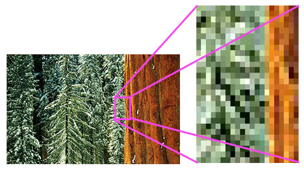

(ny <- AOI::aoi_get(state = "NY") |>
st_transform(5070) |>
dplyr::select(name))
#> Simple feature collection with 1 feature and 1 field
#> Geometry type: MULTIPOLYGON
#> Dimension: XY
#> Bounding box: xmin: 1319502 ymin: 2149150 xmax: 1997508 ymax: 2658543
#> Projected CRS: NAD83 / Conus Albers
#> name geometry
#> 1 New York MULTIPOLYGON (((1661335 263...Week 4
Raster Data
Recap: sf and spatial concepts
Spatial phenomena can be thought of discrete objects with clear boundaries or as continuous phenomenon that can be observed everywhere, with no natural boundaries.
We have described these as objects and fields (Kuhn, 2012)
Objects are usually represented by vector data consisting of:
- a geometry (simple features (
sfc,sfg)) - some attribute information (
data.frame)
- a geometry (simple features (
In R these are unified as a
sfobjectField data is typically represented by raster data
For this, we will begin our discussions using the
terrapackage
terra
Like
sf,terrais an implementation of standard raster data modelThe model is used by all GIS platforms
Represented continuous data either as continuous or categorical values as a regular set of cells in a grid (matrix)
cells have: (1) resolution, (2) infered cell coordinate (centroid) (3) the coordinate and value apply to the entire cell area
Recap: R data structures
Vector:
- A vector can have dimensions
- A 1D vector in a collection of values
- A 2D vector is a matrix
- A 3D vector is an array
- A vector can have dimensions
List: a collection of objects
data.frame: a list with requirement of equal length column (vectors)
data.frames and lists (sfc) defined our vector model
Arrays will define our raster model
Spatial Extent
One last topic with respect to vector data (that will carry us into raster) is the idea of an extent:
In geometry, the minimum bounding box for a point set (stored as POINT, POLYLINE, POLYGON) in N dimensions is “…the box with the smallest measure within which all the points lie.”
We can extract bounding box coordinates with st_bbox
- returns: an object of class
bboxof length 4.
There is a method for creating an sfc form a bbox object
Result:
Extents can be discritized in a number of ways:

What makes of a regular tesselation
Alternative representation
Regular grids can also be indexed by their centroids

Equal area from centroid
We can use our voroni diagram the show that the area closest to a cell centroid is the cell itself.

Raster Model
The raster model is one of the earliest and most widely used data models within geographic information systems (Tomlin, 1990; Goodchild, 1992, Maguire, 1992).
Typically used to record, analyze and visualize data with a continuous nature such as elevation, temperature (“GIS”), or reflected or emitted electromagnetic radiation (“Remote Sensing”)
Quotes are used because you’ll find from a data perspective these differences are artificial and a product of the ESRI/ENVI/ERDAS divide
The term
rasteroriginated from the German word for screen, implying a series of orthogonality oriented parallel lines.Digital raster objects most often take the form of a regularly spaced, grid-like pattern of rows and columns
Each element referred to as a cell, pixel, or grid point.
Many terms mean the same thing …
The entire raster is sometimes referred to as an “image”, “array”, “surface”, “matrix”, or “lattice” (Wise, 2000).
The all mean the same thing…
Cells of the raster are most often square, but may be rectangular (with differing resolutions in x and y directions) or other shapes that can be tessellated such as triangles and hexagons (Figure below from Peuquet, 1984).
Photos and Computers …


Aerial Imagery (really just a photo üòÑ)

What is stored in these cells?
Categorical Values (integer/factor)

Continuous Values (numeric)
Spectral Values
- Either Color, or sensor

Any digital image contains an RBG channel for color:
Red, green, and blue are the three additive colors (primary colors of light)
In R, colors can be defined using the RBG channels
Pure RBG

RGB and bytes/bits
The red, green and blue use 8 bits each (1 byte), which each have integer values from 0 to 255.
This makes 256^3 = 16,777,216 possible colors.
See more here
How does this relate to the selection of 256x256 pixel tiles in web maps?
The secondary colors in an RGB color wheel are cyan, magenta, and yellow because these are the three subtractive colors
Think of your printer and the CMYK ink cartridges! Where black, is the absence of color (0,0,0)
Why do we care?
Pixels are the base unit of raster data and have a resolution
This is the X and the Y dimension of each cell in the units of the CRS
Resolution drives image clarity (granulairty)
- Higher resolution (smaller cells) = more detail, but bigger data!


Raster images seek to discritize the real world into cell-based values
- Again either integer (categorical), continuous, or signal

All rasters have an extent!
- This is the same extent as a bounding box
- Can be described as 4 values (xmin,ymin,xmax,ymax)

Implicity Coordinates
Unlike vector data, the raster data model stores the coordinate of the grid cells indirectly
Coordinates are derived from the reference (Xmin,Ymin) the resolution, and the cell index (e.g. [100,150])
For example: If we want the coordinates of a value in the 3rd row and the 40th column of a raster matrix, we have to move from the origin (Xmin, Ymin) (3 x Xres) in x-direction and (40 x Yres) in y-direction
So, any image (.png, .tif, .gif) can be read as a raster…
The raster is defined by the extent and resolution of the cells
To be spatial, the extent (thus coordinates) must be grounded in an CRS
(img = terra::rast('images/17-raster-extent.png'))
#> class : SpatRaster
#> dimensions : 788, 1067, 4 (nrow, ncol, nlyr)
#> resolution : 1, 1 (x, y)
#> extent : 0, 1067, 0, 788 (xmin, xmax, ymin, ymax)
#> coord. ref. :
#> source : 17-raster-extent.png
#> names : 17-rast~xtent_1, 17-rast~xtent_2, 17-rast~xtent_3, 17-rast~xtent_4Raster Data in R
A SpatRast represents single-layer (variable) raster data.
A SpatRast always stores the fundamental parameters that describe it. - The number of columns and rows, - The spatial extent - The Coordinate Reference System.
In addition, a SpatRast can store information about the file where raster values are stored (if there is such a file).
Here we construct an empty raster:
Extract Diminisionality …
Raster Values
values can be extracted with values()
Assigning a values as a vector
values(r) <- 1:ncell(r)
r
#> class : SpatRaster
#> dimensions : 20, 20, 1 (nrow, ncol, nlyr)
#> resolution : 2, 2 (x, y)
#> extent : -120, -80, 20, 60 (xmin, xmax, ymin, ymax)
#> coord. ref. : lon/lat WGS 84 (CRS84) (OGC:CRS84)
#> source(s) : memory
#> name : lyr.1
#> min value : 1
#> max value : 400
head(values(r))
#> lyr.1
#> [1,] 1
#> [2,] 2
#> [3,] 3
#> [4,] 4
#> [5,] 5
#> [6,] 6Raster is S4
Compared to S3, the S4 object system is much stricter, and much closer to other OO systems.
What does this mean for us?
Data is structured with a “representation”
which is a list of slot (or attributes), giving their names and classes, accessed with @
str(r, max.level = 2)
#> S4 class 'SpatRaster' [package "terra"]
r@pntr
#> C++ object <0x107b7ea70> of class 'SpatRaster' <0x113daf580>
r@pntr$ncol
#> Class method definition for method ncol()
#> function ()
#> {
#> " unsigned long ncol() \n docstring : ncol"
#> .External(list(name = "CppMethod__invoke_notvoid", address = <pointer: 0x113e9d470>,
#> dll = list(name = "Rcpp", path = "/Library/Frameworks/R.framework/Versions/4.4-arm64/Resources/library/Rcpp/libs/Rcpp.so",
#> dynamicLookup = TRUE, handle = <pointer: 0x7aab93b0>,
#> info = <pointer: 0x113ecbcf0>, forceSymbols = FALSE),
#> numParameters = -1L), <pointer: 0x113daf580>, <pointer: 0x113f1ffb0>,
#> .pointer)
#> }
#> <environment: 0x149b36048>Access via Function
ext(r)
#> SpatExtent : -120, -80, 20, 60 (xmin, xmax, ymin, ymax)
crs(r)
#> [1] "GEOGCRS[\"WGS 84 (CRS84)\",\n DATUM[\"World Geodetic System 1984\",\n ELLIPSOID[\"WGS 84\",6378137,298.257223563,\n LENGTHUNIT[\"metre\",1]]],\n PRIMEM[\"Greenwich\",0,\n ANGLEUNIT[\"degree\",0.0174532925199433]],\n CS[ellipsoidal,2],\n AXIS[\"geodetic longitude (Lon)\",east,\n ORDER[1],\n ANGLEUNIT[\"degree\",0.0174532925199433]],\n AXIS[\"geodetic latitude (Lat)\",north,\n ORDER[2],\n ANGLEUNIT[\"degree\",0.0174532925199433]],\n USAGE[\n SCOPE[\"unknown\"],\n AREA[\"World\"],\n BBOX[-90,-180,90,180]],\n ID[\"OGC\",\"CRS84\"]]"
nrow(r)
#> [1] 20
ncol(r)
#> [1] 20
head(values(r))
#> lyr.1
#> [1,] 1
#> [2,] 2
#> [3,] 3
#> [4,] 4
#> [5,] 5
#> [6,] 6Multi-layers

In many cases multi-variable raster data sets are used. Variables can related to time or measurements
A SpatRaster is a collection ofobjects with the same spatial extent and resolution.
In essence it is a list of objects, or a 3D array.
Remember our Array data?
(v = 1:27)
#> [1] 1 2 3 4 5 6 7 8 9 10 11 12 13 14 15 16 17 18 19 20 21 22 23 24 25
#> [26] 26 27
(arr = array(v, dim = c(3,3,3)))
#> , , 1
#>
#> [,1] [,2] [,3]
#> [1,] 1 4 7
#> [2,] 2 5 8
#> [3,] 3 6 9
#>
#> , , 2
#>
#> [,1] [,2] [,3]
#> [1,] 10 13 16
#> [2,] 11 14 17
#> [3,] 12 15 18
#>
#> , , 3
#>
#> [,1] [,2] [,3]
#> [1,] 19 22 25
#> [2,] 20 23 26
#> [3,] 21 24 27An array is a single file so it can be “rasterized”
Core Raster Principles
1. Bounding Box / Extents
Geometries have extents that define the maximum and minimum coverage of the shape in a coordinate reference system

Image Source: National Ecological Observatory Network (NEON)
2. Extent
When dealing with objects, the extent (or bbox) is derived from the coordinate set
When dealing with raster data, the extent is a fondational component of the raster data structure
- That is, we need to know the area the raster is covering!
Image Source: National Ecological Observatory Network (NEON)
3. Discretization
Once we know the extent, we need to know how that space is split up
Two complimentary bit of information can tell us this:
- Resolution (res)
- Number of row and number of columns (nrow/ncol)
Image Source: National Ecological Observatory Network (NEON)
So,
A raster is made of an extent, and a resolution / row-column structure
A vector of values fill that structure (same way a vector in R can have diminisons)
- These values are often scaled to integers to reduce file size
Values are referenced in cartisian space, based on cell index
A CRS along with the extent, can provide spatial reference / coordinates
General Process
Almost all remote sensing / image analysis begins with the same basic steps:
Identifying an area of interest (AOI)
Identifying and downloading the relevant images or products
Analyzing the raster products
The definition of a AOI is critical because raster data in continuous, therefore we need to define the bounds of the study rather then the bounds of the objects
- But, objects often (even typically) define our bounds
Find elevation data for Fort Collins:
- Define the AOI
- Read data from elevation map tiles, for a specific zoom, and crop to the AOI
- The resulting raster …
(elev = rast("data/foco-elev.tif"))
#> class : SpatRaster
#> dimensions : 3450, 3450, 1 (nrow, ncol, nlyr)
#> resolution : 28.98965, 28.98965 (x, y)
#> extent : -810156.6, -710142.3, 1934613, 2034627 (xmin, xmax, ymin, ymax)
#> coord. ref. : +proj=aea +lat_0=23 +lon_0=-96 +lat_1=29.5 +lat_2=45.5 +x_0=0 +y_0=0 +datum=NAD83 +units=m +no_defs
#> source : foco-elev.tif
#> name : foco-elev
#> min value : 1382
#> max value : 4346
Raster Values Continuity
elev
#> class : SpatRaster
#> dimensions : 3450, 3450, 1 (nrow, ncol, nlyr)
#> resolution : 28.98965, 28.98965 (x, y)
#> extent : -810156.6, -710142.3, 1934613, 2034627 (xmin, xmax, ymin, ymax)
#> coord. ref. : +proj=aea +lat_0=23 +lon_0=-96 +lat_1=29.5 +lat_2=45.5 +x_0=0 +y_0=0 +datum=NAD83 +units=m +no_defs
#> source : foco-elev.tif
#> name : foco-elev
#> min value : 1382
#> max value : 4346Raster Values
# The length of the vector is equal to the rows * columns
length(v) == nrow(elev) * ncol(elev)
#> [1] TRUE
# The span of the x extent divided by the resolution equals the raster rows
((xmax(elev) - xmin(elev)) / res(elev)[1]) == ncol(elev)
#> [1] TRUE
# The span of the x extent divided by the number of rows equals the raster resolution
((xmax(elev) - xmin(elev)) / ncol(elev)) == res(elev)[1]
#> [1] TRUEAll image files are the same!
Google Color Picker
Raster Algebra
So our raster data is stored as a large numeric array/vector
Many generic functions allow for simple algebra on Raster objects,
These include:
normal algebraic operators such as
+,-,*,/logical operators such as
>,>=,<,==,!functions like
abs,round,ceiling,floor,trunc,sqrt,log,log10,exp,cos,sin,atan,tan,max,min,range,prod,sum,any,all
Raster Algebra
In these functions you can mix
SpatRastobjects with numbers, as long as the first argument is a raster object.That means you can add 100 to a raster object but not a raster object to 100
For example:
elev + 100
#> class : SpatRaster
#> dimensions : 3450, 3450, 1 (nrow, ncol, nlyr)
#> resolution : 28.98965, 28.98965 (x, y)
#> extent : -810156.6, -710142.3, 1934613, 2034627 (xmin, xmax, ymin, ymax)
#> coord. ref. : +proj=aea +lat_0=23 +lon_0=-96 +lat_1=29.5 +lat_2=45.5 +x_0=0 +y_0=0 +datum=NAD83 +units=m +no_defs
#> source(s) : memory
#> varname : foco-elev
#> name : foco-elev
#> min value : 1482
#> max value : 4446
log10(elev)
#> class : SpatRaster
#> dimensions : 3450, 3450, 1 (nrow, ncol, nlyr)
#> resolution : 28.98965, 28.98965 (x, y)
#> extent : -810156.6, -710142.3, 1934613, 2034627 (xmin, xmax, ymin, ymax)
#> coord. ref. : +proj=aea +lat_0=23 +lon_0=-96 +lat_1=29.5 +lat_2=45.5 +x_0=0 +y_0=0 +datum=NAD83 +units=m +no_defs
#> source(s) : memory
#> varname : foco-elev
#> name : foco-elev
#> min value : 3.140508
#> max value : 3.638090Replacement
- Raster values can be replaced on a conditional statements
- Doing this changes the underlying data!
- If you want to retain the original data, you must make a copy of the base layer

Modifying a raster
When we want to modify the extent of a raster we can clip it to a new bounds
crop: lets you reduce the extent of a raster to the extent of another, overlapping object:

Modifying the underlying data:
mask: mask takes an input object (sf, sp, or raster) and set anything not undelying the input to a new value (default = NA)
library(osmdata)
osm = osmdata::opq(st_bbox(st_transform(fc,4326))) |>
add_osm_feature("water") |>
osmdata_sf()
(poly = osm$osm_polygons |>
st_transform(crs(elev)))
#> Simple feature collection with 181 features and 17 fields
#> Geometry type: POLYGON
#> Dimension: XY
#> Bounding box: xmin: -769181 ymin: 1977155 xmax: -753314.8 ymax: 2000444
#> Projected CRS: PROJCRS["unknown",
#> BASEGEOGCRS["NAD83",
#> DATUM["North American Datum 1983",
#> ELLIPSOID["GRS 1980",6378137,298.257222101004,
#> LENGTHUNIT["metre",1]]],
#> PRIMEM["Greenwich",0,
#> ANGLEUNIT["degree",0.0174532925199433]],
#> ID["EPSG",4269]],
#> CONVERSION["Albers Equal Area",
#> METHOD["Albers Equal Area",
#> ID["EPSG",9822]],
#> PARAMETER["Latitude of false origin",23,
#> ANGLEUNIT["degree",0.0174532925199433],
#> ID["EPSG",8821]],
#> PARAMETER["Longitude of false origin",-96,
#> ANGLEUNIT["degree",0.0174532925199433],
#> ID["EPSG",8822]],
#> PARAMETER["Latitude of 1st standard parallel",29.5,
#> ANGLEUNIT["degree",0.0174532925199433],
#> ID["EPSG",8823]],
#> PARAMETER["Latitude of 2nd standard parallel",45.5,
#> ANGLEUNIT["degree",0.0174532925199433],
#> ID["EPSG",8824]],
#> PARAMETER["Easting at false origin",0,
#> LENGTHUNIT["metre",1],
#> ID["EPSG",8826]],
#> PARAMETER["Northing at false origin",0,
#> LENGTHUNIT["metre",1],
#> ID["EPSG",8827]]],
#> CS[Cartesian,2],
#> AXIS["easting",east,
#> ORDER[1],
#> LENGTHUNIT["metre",1,
#> ID["EPSG",9001]]],
#> AXIS["northing",north,
#> ORDER[2],
#> LENGTHUNIT["metre",1,
#> ID["EPSG",9001]]]]
#> First 10 features:
#> osm_id name alt_name area basin boat
#> 6051656 6051656 <NA> <NA> <NA> <NA> <NA>
#> 23598705 23598705 Lee Lake <NA> <NA> <NA> <NA>
#> 23598868 23598868 <NA> <NA> <NA> <NA> <NA>
#> 23598945 23598945 College Lake <NA> <NA> <NA> <NA>
#> 23599224 23599224 Warren Lake <NA> <NA> <NA> <NA>
#> 23599227 23599227 Harmony Reservoir <NA> <NA> <NA> <NA>
#> 23599320 23599320 <NA> <NA> <NA> <NA> <NA>
#> 23599327 23599327 <NA> <NA> <NA> <NA> <NA>
#> 44074911 44074911 Lake Sherwood Nelson Reservoir <NA> <NA> <NA>
#> 47471957 47471957 <NA> <NA> <NA> <NA> <NA>
#> description ele gnis:feature_id intermittent landuse layer natural
#> 6051656 <NA> <NA> <NA> <NA> <NA> <NA> <NA>
#> 23598705 <NA> <NA> <NA> <NA> <NA> <NA> water
#> 23598868 <NA> <NA> <NA> <NA> <NA> <NA> <NA>
#> 23598945 <NA> <NA> <NA> <NA> <NA> <NA> water
#> 23599224 <NA> <NA> <NA> <NA> <NA> <NA> water
#> 23599227 <NA> <NA> <NA> <NA> <NA> <NA> water
#> 23599320 <NA> <NA> <NA> <NA> <NA> <NA> water
#> 23599327 <NA> <NA> <NA> <NA> <NA> <NA> water
#> 44074911 <NA> 1512 201223 <NA> <NA> <NA> water
#> 47471957 <NA> <NA> <NA> <NA> <NA> <NA> water
#> place salt source water geometry
#> 6051656 <NA> <NA> <NA> <NA> POLYGON ((-762901.7 1988981...
#> 23598705 <NA> <NA> <NA> lake POLYGON ((-765209.9 1991246...
#> 23598868 <NA> <NA> <NA> <NA> POLYGON ((-767955.5 1985345...
#> 23598945 <NA> <NA> <NA> lake POLYGON ((-766871.6 1989267...
#> 23599224 <NA> <NA> <NA> reservoir POLYGON ((-760465.5 1983486...
#> 23599227 <NA> <NA> <NA> reservoir POLYGON ((-760046.6 1982348...
#> 23599320 <NA> <NA> <NA> pond POLYGON ((-762458.2 1991222...
#> 23599327 <NA> <NA> <NA> pond POLYGON ((-763462.8 1992438...
#> 44074911 <NA> <NA> <NA> reservoir POLYGON ((-758628.3 1984729...
#> 47471957 <NA> <NA> <NA> reservoir POLYGON ((-764440.4 1992962...
What is mask doing?


Crop or/and mask
- Crop is more efficient then mask
- Often you will want to mask and crop a raster
- The correct way to do this is crop then mask
Aggregate and disaggregate
aggregateanddisaggregateallow for changing the resolution of a Raster object.This is similar to the zoom scaling on a web map except the scale factor is not set to 2
For aggregate, you need to specify a function determining what to do with the grouped cell values (default = mean).


app
Just like a vector, we can apply functions over a raster with app
These types of formulas are very useful for thresholding analysis
Question: separate Fort Collins into the higher and lower elevations

Read in the saved raster file
(r = rast("data/foco-elev.tif"))
#> class : SpatRaster
#> dimensions : 3450, 3450, 1 (nrow, ncol, nlyr)
#> resolution : 28.98965, 28.98965 (x, y)
#> extent : -810156.6, -710142.3, 1934613, 2034627 (xmin, xmax, ymin, ymax)
#> coord. ref. : +proj=aea +lat_0=23 +lon_0=-96 +lat_1=29.5 +lat_2=45.5 +x_0=0 +y_0=0 +datum=NAD83 +units=m +no_defs
#> source : foco-elev.tif
#> name : foco-elev
#> min value : 1382
#> max value : 4346Create a conditional (threshold) mask
(m = app(r, threshold))
#> class : SpatRaster
#> dimensions : 3450, 3450, 1 (nrow, ncol, nlyr)
#> resolution : 28.98965, 28.98965 (x, y)
#> extent : -810156.6, -710142.3, 1934613, 2034627 (xmin, xmax, ymin, ymax)
#> coord. ref. : +proj=aea +lat_0=23 +lon_0=-96 +lat_1=29.5 +lat_2=45.5 +x_0=0 +y_0=0 +datum=NAD83 +units=m +no_defs
#> source(s) : memory
#> name : lyr.1
#> min value : 1
#> max value : 1Results


Multiply cell-wise
- algebraic, logical, and functional operations act on a raster cell-wise
Reclassify
Reclassify is a function that allows you to change the values of a raster based on a set of rules
The rules are defined in a data frame with three columns:
min= the minimum value of the rangemax= the maximum value of the rangelab= the new value to assign to that range
(rc = classify(elev_cut, rcl, include.lowest = TRUE))
#> class : SpatRaster
#> dimensions : 3450, 3450, 1 (nrow, ncol, nlyr)
#> resolution : 28.98965, 28.98965 (x, y)
#> extent : -810156.6, -710142.3, 1934613, 2034627 (xmin, xmax, ymin, ymax)
#> coord. ref. : +proj=aea +lat_0=23 +lon_0=-96 +lat_1=29.5 +lat_2=45.5 +x_0=0 +y_0=0 +datum=NAD83 +units=m +no_defs
#> source(s) : memory
#> name : lyr.1
#> min value : 2
#> max value : 4346(s = c(r, m, elev_cut, rc) |>
setNames(c("elevation", "elev-mask", "terrain", "topography")))
#> class : SpatRaster
#> dimensions : 3450, 3450, 4 (nrow, ncol, nlyr)
#> resolution : 28.98965, 28.98965 (x, y)
#> extent : -810156.6, -710142.3, 1934613, 2034627 (xmin, xmax, ymin, ymax)
#> coord. ref. : +proj=aea +lat_0=23 +lon_0=-96 +lat_1=29.5 +lat_2=45.5 +x_0=0 +y_0=0 +datum=NAD83 +units=m +no_defs
#> sources : foco-elev.tif
#> memory
#> memory
#> memory
#> names : elevation, elev-mask, terrain, topography
#> min values : 1382, 1, 1521, 2
#> max values : 4346, 1, 4346, 4346
Real Example: Classify Rainfall Regions of Colorado
# More on global below ...
quarts = global(prcp$ppt, fivenum)
(quarts = colMeans(quarts))
#> X1 X2 X3 X4 X5
#> 6.271233 18.434247 27.995890 41.608219 105.642466
(rcl = data.frame(quarts[1:4], quarts[2:5], 1:4))
#> quarts.1.4. quarts.2.5. X1.4
#> X1 6.271233 18.43425 1
#> X2 18.434247 27.99589 2
#> X3 27.995890 41.60822 3
#> X4 41.608219 105.64247 4
Object/Field Interaction
For this example, we used OSM to extact the river data for the area of interest. We will talk more about OSM next week:
Lets find the longest river segment IN our extent

Value Extraction
Often, we want to know the profile and sinousity of a river
To do this, we need to know the inlet and outlet as well as the straight line connector
Sinuosity
Channel sinuosity is calculated by dividing the length of the stream channel by the straight line distance between the end points of the selected channel reach.
River Slope:
The change in elevation between the inlet/outlet divided by the length (rise/run) give us the slope of the river:
To calculate this, we must extract elevation values at the inlet and outlet:
River profile
What does the elevation profile of the river look like?

Map Algebra
Dana Tomlin (Tomlin 1990) defined a framework for the analyizing field data stored as grided values.
He called this framework map algebra.
Map algebra operations and functions are broken down into four types:
local
focal
zonal
global
Local
Local operations and functions are applied to each individual cell and only involve those cells sharing the same location.
More than one raster can be involved in a local operation.
For example, rasters can be summed ( each overlapping pixels is added)
Local operations also include reclassification of values.
Focal
Also referred to as “neighborhood” operations.
Assigns summary values to the output cells based on the neighboring cells in the input raster.
For example, a cell output value can be the average of 9 neighboring input cells (including the center cell) - this acts as a smoothing function.
Focal
Focal operations require a window (also known as a kernel) to work over
Additionally a kernel also defines the weight each neighboring cell contributes to the summary statistic.
For example, all cells in a 3x3 neighbor could each contribute 1/9th of their value to the summarized value (i.e. equal weight).
The weight can take on a more complex form defined by a function; such weights are defined by a kernel function.
One popular function is a Gaussian weighted function which assigns greater weight to nearby cells than those further away (Toblers first law)
Example: Focal
Lets apply a smoothing kernel to our Fort Collins elevation data over an 25x25 window, using the mean operator
Results


What did we do?
matrix(1,nrow=25,ncol=25)
#> [,1] [,2] [,3] [,4] [,5] [,6] [,7] [,8] [,9] [,10] [,11] [,12] [,13]
#> [1,] 1 1 1 1 1 1 1 1 1 1 1 1 1
#> [2,] 1 1 1 1 1 1 1 1 1 1 1 1 1
#> [3,] 1 1 1 1 1 1 1 1 1 1 1 1 1
#> [4,] 1 1 1 1 1 1 1 1 1 1 1 1 1
#> [5,] 1 1 1 1 1 1 1 1 1 1 1 1 1
#> [6,] 1 1 1 1 1 1 1 1 1 1 1 1 1
#> [7,] 1 1 1 1 1 1 1 1 1 1 1 1 1
#> [8,] 1 1 1 1 1 1 1 1 1 1 1 1 1
#> [9,] 1 1 1 1 1 1 1 1 1 1 1 1 1
#> [10,] 1 1 1 1 1 1 1 1 1 1 1 1 1
#> [11,] 1 1 1 1 1 1 1 1 1 1 1 1 1
#> [12,] 1 1 1 1 1 1 1 1 1 1 1 1 1
#> [13,] 1 1 1 1 1 1 1 1 1 1 1 1 1
#> [14,] 1 1 1 1 1 1 1 1 1 1 1 1 1
#> [15,] 1 1 1 1 1 1 1 1 1 1 1 1 1
#> [16,] 1 1 1 1 1 1 1 1 1 1 1 1 1
#> [17,] 1 1 1 1 1 1 1 1 1 1 1 1 1
#> [18,] 1 1 1 1 1 1 1 1 1 1 1 1 1
#> [19,] 1 1 1 1 1 1 1 1 1 1 1 1 1
#> [20,] 1 1 1 1 1 1 1 1 1 1 1 1 1
#> [21,] 1 1 1 1 1 1 1 1 1 1 1 1 1
#> [22,] 1 1 1 1 1 1 1 1 1 1 1 1 1
#> [23,] 1 1 1 1 1 1 1 1 1 1 1 1 1
#> [24,] 1 1 1 1 1 1 1 1 1 1 1 1 1
#> [25,] 1 1 1 1 1 1 1 1 1 1 1 1 1
#> [,14] [,15] [,16] [,17] [,18] [,19] [,20] [,21] [,22] [,23] [,24] [,25]
#> [1,] 1 1 1 1 1 1 1 1 1 1 1 1
#> [2,] 1 1 1 1 1 1 1 1 1 1 1 1
#> [3,] 1 1 1 1 1 1 1 1 1 1 1 1
#> [4,] 1 1 1 1 1 1 1 1 1 1 1 1
#> [5,] 1 1 1 1 1 1 1 1 1 1 1 1
#> [6,] 1 1 1 1 1 1 1 1 1 1 1 1
#> [7,] 1 1 1 1 1 1 1 1 1 1 1 1
#> [8,] 1 1 1 1 1 1 1 1 1 1 1 1
#> [9,] 1 1 1 1 1 1 1 1 1 1 1 1
#> [10,] 1 1 1 1 1 1 1 1 1 1 1 1
#> [11,] 1 1 1 1 1 1 1 1 1 1 1 1
#> [12,] 1 1 1 1 1 1 1 1 1 1 1 1
#> [13,] 1 1 1 1 1 1 1 1 1 1 1 1
#> [14,] 1 1 1 1 1 1 1 1 1 1 1 1
#> [15,] 1 1 1 1 1 1 1 1 1 1 1 1
#> [16,] 1 1 1 1 1 1 1 1 1 1 1 1
#> [17,] 1 1 1 1 1 1 1 1 1 1 1 1
#> [18,] 1 1 1 1 1 1 1 1 1 1 1 1
#> [19,] 1 1 1 1 1 1 1 1 1 1 1 1
#> [20,] 1 1 1 1 1 1 1 1 1 1 1 1
#> [21,] 1 1 1 1 1 1 1 1 1 1 1 1
#> [22,] 1 1 1 1 1 1 1 1 1 1 1 1
#> [23,] 1 1 1 1 1 1 1 1 1 1 1 1
#> [24,] 1 1 1 1 1 1 1 1 1 1 1 1
#> [25,] 1 1 1 1 1 1 1 1 1 1 1 1Zonal
Zonal operations compute a summary values (such as the mean) from cells aggregated to some zonal unit.
Like focal operations, a zone and a mediating function must be defined
The most basis example of a zonal function is aggregation!
Zonal Statisics (More advanced)
For more complicated object zones, exactextractr is a fast and effiecient R utility that binds the C++
exactextracttool.What is the county level mean January rainfall in California?

What about the US?

Global
Global operations make use of some or all input cells when computing an output cell value.
They are a special case of zonal operations with the entire raster represents a single zone.
Examples include generating descriptive statistics for the entire raster dataset
Summary Values
global: computes statistics for the values of each layer in a Raster* object.
Why not just mean()
In the terra package, functions like max, min, and mean, return a new SpatRast* object (with a value computed for each cell).
In contrast, global returns a single value, computed from the all the values of a layer.

Mean Monthly Rainfall for Colorado
global

Kmeans over to Raster Data!
- each layer of a SpatRaster is a layer
- each layer is a vector of values
Colorado October 2018 climate

Raster layers are vectors!
Data Prep
- Identify NA indices for latter reference
- Remove NA values
- Scale
(E <- kmeans(vs, 5, iter.max = 100))
#> K-means clustering with 5 clusters of sizes 587, 6760, 4443, 2461, 2579
#>
#> Cluster means:
#> ppt tmax tmin srad q
#> 1 3.1809306 4.58719802 -0.5826831 -1.7484176 -1.2252186
#> 2 -0.5405504 -0.23556555 -0.1516672 0.6420750 0.6217347
#> 3 0.3880379 -0.09899023 -0.9985264 -1.0895267 -1.1524177
#> 4 0.3523365 -0.06032517 0.8319069 -0.3276054 -0.4019256
#> 5 -0.3118412 -0.19852202 1.4565472 0.9045748 1.0180718
#>
#> Clustering vector:
#> [1] 4 3 3 4 4 4 4 4 4 4 4 4 4 2 4 2 2 2 2 2 2 2 2 2 2 2 2 2 2 2 2 2 2 2 2 2
#> [37] 2 2 2 2 2 3 3 3 3 3 3 3 3 3 3 3 3 3 3 3 3 3 3 3 3 3 3 3 3 3 3 3 3 3 3 3
#> [73] 3 3 3 4 4 4 4 4 4 4 3 3 4 4 3 4 4 4 4 4 4 4 4 2 2 2 2 2 2 2 2 2 2 2 2 2
#> [109] 2 2 2 2 2 2 2 2 2 2 2 2 2 2 2 2 2 2 2 2 2 2 2 2 2 2 2 2 2 2 2 2 2 2 2 2
#> [145] 2 2 2 2 2 2 2 2 2 2 2 2 2 2 2 2 2 2 2 2 2 2 2 2 2 2 4 3 3 4 4 4 4 2 4 4
#> [181] 2 4 4 2 2 2 2 2 2 2 2 2 2 2 2 2 2 2 2 2 2 2 2 2 2 2 2 2 2 2 2 3 3 3 3 3
#> [217] 3 3 3 3 3 3 3 3 3 3 3 3 3 3 3 3 3 3 3 3 3 3 3 3 3 3 3 3 3 3 4 4 4 4 3 3
#> [253] 3 3 3 3 4 4 4 4 4 4 4 4 4 2 2 2 2 2 2 2 2 2 2 2 2 2 2 2 2 2 2 2 2 2 2 2
#> [289] 2 2 2 2 2 2 2 2 2 2 2 2 2 2 2 2 2 2 2 2 2 2 2 2 2 2 2 2 2 2 2 2 2 2 2 2
#> [325] 2 2 2 2 2 2 2 2 2 2 2 2 2 2 2 2 3 3 3 3 3 4 2 2 2 2 2 2 2 2 2 2 2 2 2 2
#> [361] 2 2 2 2 2 2 2 2 2 2 2 2 2 2 2 2 2 2 2 2 2 3 3 3 3 3 3 3 3 3 3 3 3 3 3 3
#> [397] 3 3 3 3 3 3 3 3 3 3 3 3 3 3 3 3 3 3 3 3 3 3 3 3 3 3 3 3 3 3 4 4 4 4 4 4
#> [433] 4 2 2 2 2 2 2 2 2 2 2 2 2 2 2 2 2 2 2 2 2 2 2 2 2 2 2 2 2 2 2 2 2 2 2 2
#> [469] 2 2 2 2 2 2 2 2 2 2 2 2 2 2 2 2 2 2 2 2 2 2 2 2 2 2 2 2 2 2 2 2 2 2 2 2
#> [505] 2 2 2 2 2 2 4 3 3 3 3 3 4 2 2 2 2 2 2 2 2 2 2 2 2 2 2 2 2 2 2 2 2 2 2 2
#> [541] 2 2 2 2 2 2 2 2 3 3 3 3 3 3 3 3 3 3 3 3 3 3 3 3 3 3 3 3 3 3 3 3 3 3 3 3
#> [577] 3 3 3 3 3 3 3 3 3 3 3 3 3 3 3 3 3 3 3 4 4 4 4 4 2 2 2 2 2 2 2 2 2 2 2 2
#> [613] 2 2 2 2 2 2 2 2 2 2 2 2 2 2 2 2 2 2 2 2 2 2 2 2 2 2 2 2 2 2 2 2 2 2 2 2
#> [649] 2 2 2 2 2 2 2 2 2 2 2 2 2 2 2 2 2 2 2 2 2 2 2 2 2 2 2 2 2 2 2 2 2 2 2 2
#> [685] 3 3 4 4 2 2 2 2 2 2 2 2 2 2 2 2 2 2 2 2 2 2 2 2 2 2 2 2 2 2 2 2 2 3 3 3
#> [721] 3 3 3 3 3 3 3 3 3 3 3 3 3 3 3 3 3 3 3 3 3 3 3 3 3 3 3 3 3 3 3 3 3 3 3 3
#> [757] 3 3 3 3 3 3 3 3 3 4 4 4 4 2 2 2 2 2 2 2 2 2 2 2 2 2 2 2 2 2 2 2 2 2 2 2
#> [793] 2 2 2 2 2 2 2 2 2 2 2 2 2 2 2 2 2 2 2 2 2 2 2 2 2 2 2 2 2 2 2 2 2 2 2 2
#> [829] 2 2 2 2 2 2 2 2 2 2 2 2 2 2 2 2 2 2 2 2 2 2 2 2 2 2 2 2 3 3 2 2 2 2 2 2
#> [865] 2 2 2 2 2 2 2 2 2 2 2 2 2 2 2 2 2 2 2 2 2 2 3 3 3 3 3 3 3 3 3 3 3 3 3 3
#> [901] 3 3 3 3 3 3 3 3 3 3 3 3 3 3 3 3 3 3 3 3 3 3 3 3 3 3 3 3 3 3 3 3 3 3 3 4
#> [937] 4 4 4 2 2 2 2 2 2 2 2 2 2 2 2 2 2 2 2 2 2 2 2 2 2 2 2 2 2 2 2 2 2 2 2 2
#> [973] 2 2 2 2 2 2 2 2 2 2 2 2 2 2 2 2 2 2 2 2 2 2 2 2 2 2 2 2 2 2 2 2 2 2 2 2
#> [1009] 2 2 2 2 2 2 2 2 2 2 2 2 2 2 2 2 2 2 2 2 2 2 2 2 2 2 2 2 2 2 2 2 2 2 2 2
#> [1045] 2 2 2 2 2 2 2 2 2 2 2 2 3 3 3 3 3 3 3 3 3 3 3 3 3 3 3 3 3 3 3 3 3 3 3 3
#> [1081] 3 3 3 3 3 3 3 3 3 3 3 3 3 3 3 3 3 3 3 3 3 3 3 3 3 4 4 4 4 2 2 2 2 2 2 2
#> [1117] 2 2 2 2 2 2 2 2 2 2 2 2 2 2 2 2 2 2 2 2 2 2 2 2 2 2 2 2 2 2 2 2 2 2 2 2
#> [1153] 2 2 2 2 2 2 2 2 2 2 2 2 2 2 2 2 2 2 2 2 2 2 2 2 2 2 2 2 2 2 2 2 2 2 2 2
#> [1189] 2 2 4 2 2 2 2 2 2 2 2 2 2 2 2 2 2 2 2 2 2 2 2 2 2 2 2 2 2 2 2 2 2 2 2 2
#> [1225] 2 3 3 3 3 3 3 3 3 3 3 3 3 3 3 3 3 3 3 3 3 3 3 3 3 3 3 3 3 3 3 3 3 3 3 3
#> [1261] 3 3 3 3 3 3 3 3 3 3 3 3 3 3 3 3 4 4 4 2 2 2 2 2 2 2 2 2 2 2 2 2 2 2 2 2
#> [1297] 2 2 2 2 2 2 2 2 2 2 2 2 2 2 2 2 2 2 2 2 2 2 2 2 2 2 2 2 2 2 2 2 2 2 2 2
#> [1333] 2 2 2 2 2 2 2 2 2 2 2 2 2 2 2 2 2 2 2 2 2 2 2 2 2 2 2 2 4 2 2 2 2 2 2 2
#> [1369] 2 2 2 2 2 2 2 2 2 2 2 2 2 2 2 2 2 2 2 2 2 2 2 2 2 3 3 3 3 3 3 3 3 3 3 3
#> [1405] 3 3 3 3 3 3 3 3 3 3 3 3 3 3 3 3 3 3 3 3 3 3 3 3 3 3 3 3 3 3 3 3 3 3 3 3
#> [1441] 3 3 3 3 3 4 4 4 4 2 2 2 2 2 2 2 2 2 2 2 2 2 2 2 2 2 2 2 2 2 2 2 2 2 2 2
#> [1477] 2 2 2 2 2 2 2 2 2 2 2 2 2 2 2 2 2 2 2 2 2 2 2 2 2 2 2 2 2 2 2 2 2 2 2 2
#> [1513] 2 2 2 2 2 2 2 2 2 2 2 2 2 2 2 2 2 2 4 2 2 2 2 2 2 2 2 2 2 2 2 2 2 2 2 2
#> [1549] 2 2 2 2 2 2 2 2 2 2 2 2 2 2 3 3 3 3 3 3 3 3 3 3 3 3 3 3 3 3 3 3 3 3 3 3
#> [1585] 3 3 3 3 3 3 3 3 3 3 3 3 3 3 3 3 3 3 3 3 3 3 3 3 3 3 3 3 3 3 4 4 4 4 2 2
#> [1621] 2 2 2 2 2 2 2 2 2 2 2 2 2 2 2 2 2 2 2 2 2 2 2 2 2 2 2 2 2 2 2 2 2 2 2 2
#> [1657] 2 2 2 2 2 2 2 2 2 2 2 2 2 2 2 2 2 2 2 2 2 2 2 2 2 2 2 2 2 2 2 2 2 2 2 2
#> [1693] 2 2 2 2 2 2 2 2 4 2 2 2 2 2 2 2 2 2 2 2 2 2 2 2 2 2 2 2 2 2 2 2 2 2 2 2
#> [1729] 2 2 2 2 3 3 3 3 3 3 3 3 3 3 3 3 3 3 3 3 3 3 3 3 3 3 3 3 3 3 3 3 3 3 3 3
#> [1765] 3 3 3 3 3 3 3 3 3 3 3 3 3 3 3 3 3 3 3 3 3 4 4 4 4 4 4 2 2 2 2 2 2 2 2 2
#> [1801] 2 2 2 2 2 2 2 2 2 2 2 2 2 2 2 2 2 2 2 2 2 2 2 2 2 2 2 2 2 2 2 2 2 2 2 2
#> [1837] 2 2 2 2 2 2 2 2 2 2 2 2 2 2 2 2 2 2 2 2 2 2 2 2 2 2 2 2 2 2 2 2 2 2 2 2
#> [1873] 2 2 2 2 2 2 2 2 2 2 2 2 2 2 2 2 2 2 2 2 2 2 2 2 2 2 2 2 2 2 3 3 3 3 3 3
#> [1909] 3 3 3 3 3 3 3 3 3 3 3 3 3 3 3 3 3 3 3 3 3 3 3 3 3 3 3 3 3 3 3 3 3 3 3 3
#> [1945] 3 3 3 3 3 3 3 3 3 3 3 3 3 3 4 4 4 4 2 2 2 2 2 2 2 2 2 2 2 2 2 2 2 2 2 2
#> [1981] 2 2 2 2 2 2 2 2 2 2 2 2 2 2 2 2 2 2 2 2 2 2 2 2 2 2 2 2 2 2 2 2 2 2 2 2
#> [2017] 2 2 2 2 2 2 2 2 2 2 2 2 2 2 2 2 2 2 2 2 2 2 2 2 2 2 2 2 2 2 2 2 2 2 2 2
#> [2053] 2 2 2 2 2 2 2 2 2 2 2 2 2 2 2 2 2 2 2 3 3 3 3 3 3 3 3 3 3 3 3 3 3 3 3 3
#> [2089] 3 3 3 3 3 3 3 3 3 3 3 3 3 3 3 3 3 3 3 3 3 3 3 3 3 3 3 3 3 3 3 3 3 3 3 3
#> [2125] 3 3 3 3 4 4 4 4 2 2 2 2 2 2 2 2 2 2 2 2 2 2 2 2 2 2 2 2 2 2 2 2 2 2 2 2
#> [2161] 2 2 2 2 2 2 2 2 2 2 2 2 2 2 2 2 2 2 2 2 2 2 2 2 2 2 2 2 2 2 2 2 2 2 2 2
#> [2197] 2 2 2 2 2 2 2 2 2 2 2 2 2 2 2 2 2 2 2 2 2 2 2 2 2 2 2 2 2 2 2 2 2 2 2 2
#> [2233] 2 2 2 2 2 2 2 2 3 3 3 3 3 3 3 3 3 3 3 3 3 3 3 3 3 3 3 3 3 3 3 3 3 3 3 3
#> [2269] 3 3 3 3 3 3 3 3 3 3 3 3 3 3 3 3 3 3 3 3 3 3 3 3 3 3 3 3 3 3 3 4 4 2 2 2
#> [2305] 2 2 2 2 2 2 2 2 2 2 2 2 2 2 2 2 2 2 2 2 2 2 2 2 2 2 2 2 2 2 2 2 2 2 2 2
#> [2341] 2 2 2 2 2 2 2 2 2 2 2 2 2 2 2 2 2 2 2 2 2 2 2 2 2 2 2 2 2 2 2 2 2 2 2 2
#> [2377] 2 2 2 2 2 2 2 2 2 2 2 2 2 2 2 2 2 2 2 2 2 2 2 2 2 2 2 2 2 2 2 2 2 2 3 3
#> [2413] 3 3 3 3 3 3 3 3 3 3 3 3 3 3 3 3 3 3 3 3 3 3 3 3 3 3 3 3 3 3 3 3 3 3 3 3
#> [2449] 3 3 3 3 3 3 3 3 3 3 3 3 3 3 3 3 3 3 3 4 4 4 4 2 2 2 2 2 2 2 2 2 2 2 2 2
#> [2485] 2 2 2 2 2 2 2 2 2 2 2 2 2 2 2 2 2 2 2 2 2 2 2 2 2 2 2 2 2 2 2 2 2 2 2 2
#> [2521] 2 2 2 2 2 2 2 2 2 2 2 2 2 2 2 2 2 2 2 2 2 2 2 2 2 2 2 2 2 2 4 4 2 2 2 2
#> [2557] 2 2 2 2 2 2 2 2 2 2 2 2 2 2 2 2 2 2 2 2 3 3 3 3 3 3 3 3 3 3 3 3 3 3 3 3
#> [2593] 3 3 3 3 3 3 3 3 3 3 3 3 3 3 3 3 3 3 3 3 3 3 3 3 3 3 3 3 3 3 3 3 3 3 3 3
#> [2629] 3 3 3 3 3 3 3 4 4 4 4 4 4 2 2 2 2 2 2 2 2 2 2 2 2 2 2 2 2 2 2 2 2 2 2 2
#> [2665] 2 2 2 2 2 2 2 2 2 2 2 2 2 2 2 2 2 2 2 2 2 2 2 2 2 2 2 2 2 2 2 2 2 2 2 2
#> [2701] 2 2 2 2 2 2 2 2 2 2 2 2 2 2 2 2 2 2 2 2 4 3 2 2 2 3 3 3 3 2 2 2 2 2 2 2
#> [2737] 2 2 2 2 2 2 2 2 3 3 3 3 3 3 3 3 3 3 3 3 3 3 3 3 3 3 3 3 3 3 3 3 3 3 3 3
#> [2773] 3 3 3 3 3 3 3 3 3 3 3 3 3 3 3 3 3 3 3 3 3 3 3 3 3 3 3 3 3 3 3 3 4 4 4 4
#> [2809] 4 4 4 2 2 2 2 2 2 2 2 2 2 2 2 2 2 2 2 2 2 2 2 2 2 2 2 2 2 2 2 2 2 2 2 2
#> [2845] 2 2 2 2 2 2 2 2 2 2 2 2 2 2 2 2 2 2 2 2 2 2 2 2 2 2 2 2 2 2 2 2 2 2 2 2
#> [2881] 2 2 2 2 2 2 2 2 2 2 2 2 2 2 3 3 3 3 2 2 2 2 2 2 2 2 2 2 2 2 2 3 3 3 3 3
#> [2917] 3 3 3 3 3 3 3 3 3 3 3 3 3 3 3 3 3 3 3 3 3 3 3 3 3 3 3 3 3 3 3 3 3 3 3 3
#> [2953] 3 3 3 3 3 3 3 3 3 3 3 3 3 3 3 3 3 3 3 3 3 4 4 4 4 4 4 4 4 2 2 2 2 2 2 2
#> [2989] 2 2 2 2 2 2 2 2 2 2 2 2 2 2 2 2 2 2 2 2 2 2 2 2 2 2 2 2 2 2 2 2 2 2 2 2
#> [3025] 2 2 2 2 2 2 2 2 2 2 2 2 2 2 2 2 2 2 2 2 2 2 2 2 2 2 2 2 2 2 2 2 2 2 2 2
#> [3061] 2 2 2 2 3 2 2 2 2 2 2 2 2 2 2 2 2 2 2 2 2 3 3 3 3 3 3 3 3 3 3 3 3 3 3 3
#> [3097] 3 3 3 3 3 3 3 3 3 3 3 3 3 3 3 3 3 3 3 3 3 3 3 3 3 3 3 3 3 3 3 3 3 3 3 3
#> [3133] 3 3 3 3 3 3 3 3 3 3 3 3 3 3 3 4 4 4 2 2 2 2 2 2 2 2 2 2 2 2 2 2 2 2 2 2
#> [3169] 2 2 2 2 2 2 2 2 2 2 2 2 2 2 2 2 2 2 2 2 2 2 2 2 2 2 2 2 2 2 2 2 2 2 2 2
#> [3205] 2 2 2 2 2 2 2 2 2 2 2 2 2 2 2 2 2 2 2 2 2 2 2 2 2 2 2 2 2 2 2 2 2 2 2 2
#> [3241] 2 2 2 2 2 2 2 2 2 2 2 2 3 3 3 3 3 3 3 3 3 3 3 3 3 3 3 3 3 3 3 3 3 3 3 3
#> [3277] 3 3 3 3 3 3 3 3 3 3 3 3 3 3 3 3 3 3 3 3 3 3 3 3 3 3 3 3 3 3 3 3 3 3 3 3
#> [3313] 3 3 3 3 3 4 4 4 2 2 2 2 2 2 2 2 2 2 2 2 2 2 2 2 2 2 2 2 2 2 2 2 2 2 2 2
#> [3349] 2 2 2 2 2 2 2 2 2 2 2 2 2 2 2 2 2 2 2 2 2 2 2 2 2 2 2 2 2 2 2 2 2 2 2 2
#> [3385] 2 2 2 2 2 2 2 2 2 2 2 2 2 2 2 2 2 2 2 2 2 2 2 2 2 2 2 2 2 2 2 2 2 2 2 2
#> [3421] 2 2 3 3 3 3 3 3 3 3 3 3 3 3 3 3 3 3 3 3 3 3 3 3 3 3 3 3 3 3 3 3 3 3 3 3
#> [3457] 3 3 3 3 3 3 3 3 3 3 3 3 3 3 3 3 3 3 3 3 3 3 3 3 3 3 3 3 3 3 4 4 4 2 2 2
#> [3493] 2 2 2 2 2 2 2 2 2 2 2 2 2 2 2 2 2 2 2 2 2 2 2 2 2 2 2 2 2 2 2 2 2 2 2 2
#> [3529] 2 2 2 2 2 2 2 2 2 2 2 2 2 2 2 2 2 2 2 2 2 2 2 2 2 2 2 2 2 2 2 2 2 2 2 2
#> [3565] 2 2 2 2 2 2 2 2 2 2 2 2 2 2 2 2 2 2 2 2 2 2 2 2 2 2 2 2 3 3 3 3 3 3 3 3
#> [3601] 3 3 3 3 3 3 3 3 3 3 3 3 3 3 3 3 3 3 3 3 3 3 3 3 3 3 3 3 3 3 3 3 3 3 3 3
#> [3637] 3 3 3 3 3 3 3 3 3 3 3 3 3 3 3 3 3 3 3 3 4 4 4 4 2 2 2 2 2 2 2 2 2 2 2 2
#> [3673] 2 2 2 2 2 2 2 2 2 2 2 2 2 2 2 2 2 2 2 2 2 2 2 2 2 2 2 2 2 2 2 2 2 2 2 2
#> [3709] 2 2 2 2 2 2 2 2 2 2 2 2 2 2 2 2 2 2 2 2 2 2 2 2 2 2 2 2 2 2 2 2 2 2 2 2
#> [3745] 2 2 2 2 2 2 2 2 2 2 2 2 2 2 2 2 2 2 2 3 3 3 3 3 3 3 3 3 3 3 3 3 3 3 3 3
#> [3781] 3 3 3 3 3 3 3 3 3 3 3 3 3 3 3 3 3 3 3 3 3 3 3 3 3 3 3 3 3 3 3 3 3 3 3 3
#> [3817] 3 3 3 3 3 3 3 3 3 3 3 4 4 4 2 2 2 2 2 2 2 2 2 2 2 2 2 2 2 2 2 2 2 2 2 2
#> [3853] 2 2 2 2 2 2 2 2 2 2 2 2 2 2 2 2 2 2 2 2 2 2 2 2 2 2 2 2 2 2 2 2 2 2 2 2
#> [3889] 2 2 2 2 2 2 2 2 2 2 2 2 2 2 2 2 2 2 2 2 2 2 2 2 2 2 2 2 2 2 2 2 2 2 2 2
#> [3925] 2 2 2 2 2 2 2 2 2 2 3 3 3 3 3 3 3 3 3 3 3 3 3 3 3 3 3 3 3 3 3 3 3 3 3 3
#> [3961] 3 3 3 3 3 3 3 3 3 3 3 3 3 3 3 3 3 3 3 3 3 3 3 3 3 3 3 3 3 3 3 3 3 3 3 3
#> [3997] 3 4 4 4 2 2 2 2 2 2 2 5 2 2 2 2 2 2 2 2 2 2 2 2 2 2 2 2 2 2 2 2 2 2 2 2
#> [4033] 2 2 2 2 2 2 2 2 2 2 2 2 2 2 2 2 2 2 2 2 2 2 2 2 2 2 2 2 2 2 2 2 2 2 2 2
#> [4069] 2 2 2 2 2 2 2 2 2 2 2 2 2 2 2 2 2 2 2 2 2 2 2 2 2 2 2 2 2 2 2 2 2 2 2 2
#> [4105] 3 3 3 3 3 3 3 3 3 3 3 3 3 3 3 3 3 3 3 3 3 3 3 3 3 3 3 3 3 3 3 3 3 3 3 3
#> [4141] 3 3 3 3 3 3 3 3 3 3 3 3 3 3 3 3 3 3 3 3 3 3 3 3 3 3 3 4 4 4 2 2 2 2 2 2
#> [4177] 2 2 2 2 2 2 2 2 2 2 2 2 2 2 2 2 2 2 2 2 2 2 2 2 2 2 2 2 2 2 2 2 2 2 2 2
#> [4213] 2 2 2 2 2 2 2 2 2 2 2 2 2 2 2 2 2 2 2 2 2 2 2 2 2 2 2 2 2 2 2 2 2 2 2 2
#> [4249] 2 2 2 2 2 2 2 2 2 2 2 2 2 2 2 2 2 2 2 2 2 2 2 3 3 2 3 3 3 3 3 3 3 3 3 3
#> [4285] 3 3 3 3 3 3 3 3 3 3 3 3 3 3 3 3 3 3 3 3 3 3 3 3 3 3 3 3 3 3 3 3 3 3 3 3
#> [4321] 3 3 3 3 3 3 3 3 3 3 3 3 3 3 3 3 4 4 4 4 2 2 2 2 5 5 2 2 2 5 5 2 2 2 2 2
#> [4357] 2 2 2 2 2 2 2 2 2 2 2 2 2 2 2 2 2 2 2 2 2 2 2 2 2 2 2 2 2 2 2 2 2 2 2 2
#> [4393] 2 2 2 2 2 2 2 2 2 2 2 2 2 2 2 2 2 2 2 2 2 2 2 2 2 2 2 2 2 2 2 2 2 2 2 2
#> [4429] 2 2 2 2 2 2 2 2 2 2 2 2 2 3 3 3 3 3 3 3 3 3 3 3 3 3 3 3 3 3 3 3 3 3 3 3
#> [4465] 3 3 3 3 3 3 3 3 3 3 3 3 3 3 3 3 3 3 3 3 3 3 3 3 3 3 3 3 3 3 3 3 3 3 3 3
#> [4501] 3 3 3 3 3 3 4 4 4 4 4 2 2 2 5 5 5 5 5 5 5 5 5 2 2 2 2 2 2 2 2 2 2 2 2 2
#> [4537] 2 2 2 2 2 2 2 2 2 2 2 2 2 2 2 2 2 2 2 2 2 2 2 2 2 2 2 2 2 2 2 2 2 2 2 2
#> [4573] 2 2 2 2 2 2 2 2 2 2 2 2 2 2 2 2 2 2 2 2 2 2 2 2 2 2 2 2 2 3 3 2 2 2 2 2
#> [4609] 2 2 3 3 3 3 3 3 3 3 3 3 3 3 3 3 3 3 3 3 3 3 3 3 3 3 3 3 3 3 3 3 3 3 3 3
#> [4645] 3 3 3 3 3 3 3 3 3 3 3 3 3 3 3 3 3 3 3 3 3 3 3 3 3 3 3 3 3 3 3 3 4 4 4 4
#> [4681] 4 2 2 2 5 5 5 5 5 5 5 5 5 5 2 2 2 2 2 2 2 2 2 2 2 2 2 2 2 2 2 2 2 2 2 2
#> [4717] 2 2 2 2 2 2 2 2 2 2 2 2 2 2 2 2 2 2 2 2 2 2 2 2 2 2 2 2 2 2 2 2 2 2 2 2
#> [4753] 2 2 2 2 2 2 2 2 2 2 2 2 2 2 2 2 2 2 2 3 3 2 2 2 2 2 2 2 3 3 3 3 3 3 3 3
#> [4789] 3 3 3 3 3 3 3 3 3 3 3 3 3 3 3 3 3 3 3 3 3 3 3 3 3 3 3 3 3 3 3 3 3 3 3 3
#> [4825] 3 3 3 3 3 3 3 3 3 3 3 3 3 3 3 3 3 3 3 3 3 3 3 3 4 4 4 4 2 2 5 5 5 5 5 5
#> [4861] 5 5 2 2 2 2 2 2 2 2 2 2 2 2 2 2 2 2 2 2 2 2 2 2 2 2 2 2 2 2 2 2 2 2 2 2
#> [4897] 2 2 2 2 2 2 2 2 2 2 2 2 2 2 2 2 2 2 2 2 2 2 2 2 2 2 2 2 2 2 2 2 2 2 2 2
#> [4933] 2 2 2 2 2 2 2 2 2 2 3 2 2 2 2 2 2 2 3 3 3 3 3 3 3 3 3 3 3 3 3 3 3 3 3 3
#> [4969] 3 3 3 3 3 3 3 3 3 3 3 3 3 3 3 3 3 3 3 3 3 3 3 3 3 3 3 3 3 3 3 3 3 3 3 3
#> [5005] 3 3 3 3 3 3 3 3 3 3 3 3 3 3 4 4 4 4 2 2 5 5 5 5 5 5 5 5 2 2 2 5 2 2 2 2
#> [5041] 2 2 2 2 2 2 2 2 2 2 2 2 2 2 2 2 2 2 2 2 2 2 2 2 2 2 2 2 2 2 2 2 2 2 2 2
#> [5077] 2 2 2 2 2 2 2 2 2 2 2 2 2 2 2 2 2 2 2 2 2 2 2 2 2 2 2 2 2 2 2 2 2 2 2 2
#> [5113] 3 3 2 2 2 2 3 3 3 3 3 3 3 3 3 3 3 3 3 3 3 3 3 3 3 3 3 3 3 3 3 3 3 3 3 3
#> [5149] 3 3 3 3 3 3 3 3 3 3 3 3 3 3 3 3 3 3 3 3 3 3 3 3 3 3 3 3 3 3 3 3 3 3 3 3
#> [5185] 3 4 4 3 4 4 4 4 2 2 5 5 5 5 5 5 5 5 5 2 2 5 2 2 2 2 2 2 2 2 2 2 2 2 2 2
#> [5221] 2 2 2 2 2 2 2 2 2 2 2 2 2 2 2 2 2 2 2 2 2 2 2 2 2 2 2 2 2 2 2 2 2 2 2 2
#> [5257] 2 2 2 2 2 2 2 2 2 2 2 2 2 2 2 2 2 2 2 2 2 2 2 2 2 2 3 3 3 3 2 3 3 3 3 3
#> [5293] 3 3 3 3 3 3 3 3 3 3 3 3 3 3 3 3 3 3 3 3 3 3 3 3 3 3 3 3 3 3 3 3 3 3 3 3
#> [5329] 3 3 3 3 3 3 3 3 3 3 3 3 3 3 3 3 3 3 3 3 3 3 3 3 3 4 4 4 4 4 4 4 4 4 2 2
#> [5365] 5 5 5 5 5 5 5 5 5 5 2 2 2 2 2 2 2 2 2 2 2 2 2 2 2 2 2 2 2 2 2 2 2 2 2 2
#> [5401] 2 2 2 2 2 2 2 2 2 2 2 2 2 2 2 2 2 2 2 2 2 2 2 2 2 2 2 2 2 2 2 2 2 2 2 2
#> [5437] 2 2 2 2 2 2 2 2 2 2 2 2 2 2 2 2 3 3 3 3 3 3 3 3 3 3 3 3 3 3 3 3 3 3 3 3
#> [5473] 3 3 3 3 3 3 3 3 3 3 3 3 3 3 3 3 3 3 3 3 3 3 3 3 3 3 3 3 3 3 3 3 3 3 3 3
#> [5509] 3 3 3 3 3 3 3 3 3 3 3 3 3 3 3 3 4 4 4 4 4 4 4 4 4 2 5 5 5 5 5 5 5 5 5 5
#> [5545] 5 2 2 2 2 2 2 2 2 2 2 2 2 2 2 2 2 2 2 2 2 2 2 2 2 2 2 2 2 2 2 2 2 2 2 2
#> [5581] 2 2 2 2 2 2 2 2 2 2 2 2 2 2 2 2 2 2 2 2 2 2 2 2 2 2 2 2 2 2 2 2 2 2 2 2
#> [5617] 2 2 2 2 3 3 3 3 3 3 3 3 3 3 3 3 3 3 3 3 3 3 3 3 3 3 3 3 3 3 3 3 3 3 3 3
#> [5653] 3 3 3 3 3 3 3 3 3 3 3 3 3 3 3 3 3 3 3 3 3 3 3 3 3 3 3 3 3 3 3 3 3 3 3 3
#> [5689] 3 3 3 3 3 3 3 3 3 4 4 4 4 4 4 2 2 5 5 5 5 5 5 5 5 5 5 2 2 2 2 2 2 2 2 2
#> [5725] 2 2 2 2 2 2 2 2 2 2 2 2 2 2 2 2 2 2 2 2 2 2 2 2 2 2 2 2 2 2 2 2 2 2 2 2
#> [5761] 2 2 2 2 2 2 2 2 2 2 2 2 2 2 2 2 2 2 2 2 2 2 2 2 2 2 2 2 2 3 3 3 3 3 3 3
#> [5797] 3 3 3 3 3 3 3 3 3 3 3 3 3 3 3 3 3 3 3 3 3 3 3 3 3 3 3 3 3 3 3 3 3 3 3 3
#> [5833] 3 3 3 3 3 3 3 3 3 3 3 3 3 3 3 3 3 3 3 3 3 3 3 3 3 3 3 3 3 3 3 3 3 3 4 4
#> [5869] 4 4 4 4 4 2 5 5 5 5 5 5 5 5 5 5 5 2 2 2 2 2 2 2 2 2 2 2 2 2 2 2 2 2 2 2
#> [5905] 2 2 2 2 2 2 2 2 2 2 2 2 2 2 2 2 2 2 2 2 2 2 2 2 2 2 2 2 2 2 2 2 2 2 2 2
#> [5941] 2 2 2 2 2 2 2 2 2 2 2 2 2 2 2 2 3 3 3 3 3 3 3 3 3 3 3 3 3 3 3 3 3 3 3 3
#> [5977] 3 3 3 3 2 2 2 3 3 3 2 3 3 3 3 3 3 3 3 3 3 3 3 3 3 3 3 3 3 3 3 3 3 3 3 3
#> [6013] 3 3 3 3 3 3 3 3 3 3 3 3 3 3 3 3 3 3 3 3 3 3 3 3 4 4 4 4 4 4 4 4 2 5 5 5
#> [6049] 5 5 5 5 5 5 5 5 5 2 2 2 2 2 2 2 2 2 2 2 2 2 2 2 2 2 2 2 2 2 2 2 2 2 2 2
#> [6085] 2 2 2 2 2 2 2 2 2 2 2 2 2 2 2 2 2 2 2 2 2 2 2 2 2 2 2 2 2 2 2 2 2 2 2 2
#> [6121] 2 2 2 2 2 2 2 2 2 2 3 3 3 3 3 3 3 3 3 3 3 3 3 3 3 3 3 3 3 2 2 2 2 2 2 2
#> [6157] 2 2 2 3 3 3 3 3 3 3 3 3 3 3 3 3 3 3 3 3 3 3 3 3 3 3 3 3 3 3 3 3 3 3 3 3
#> [6193] 3 3 3 3 3 3 3 3 3 3 3 3 3 3 3 3 3 4 4 4 4 4 4 5 5 5 5 5 5 5 5 5 5 5 5 5
#> [6229] 5 2 2 2 2 2 2 2 2 2 2 2 2 2 2 2 2 2 2 2 2 2 2 2 2 2 2 2 2 2 2 2 2 2 2 2
#> [6265] 2 2 2 2 2 2 2 2 2 2 2 2 2 2 2 2 2 2 2 2 2 2 2 2 2 2 2 2 2 2 2 2 2 2 2 2
#> [6301] 2 3 2 2 2 2 2 3 2 3 3 3 3 3 3 3 3 2 2 2 2 2 2 2 2 2 2 3 3 3 3 3 3 3 3 3
#> [6337] 3 3 3 3 3 3 3 3 3 3 3 3 3 3 3 3 3 3 3 3 3 3 3 3 3 3 3 3 3 3 3 3 3 3 3 3
#> [6373] 3 3 3 3 3 3 3 4 4 4 4 4 4 5 5 5 5 5 5 5 5 5 5 5 5 5 5 2 2 2 2 2 2 2 2 2
#> [6409] 2 2 2 2 2 2 2 2 2 2 2 2 2 2 2 2 2 2 2 2 2 2 2 2 2 2 2 2 2 2 2 2 2 2 2 2
#> [6445] 2 2 2 2 2 2 2 2 2 2 2 2 2 2 2 2 2 2 2 2 2 2 2 2 2 2 2 3 3 2 2 2 2 2 2 3
#> [6481] 2 3 3 2 2 2 2 2 2 2 2 2 2 2 2 2 3 3 3 3 3 3 3 3 3 3 3 3 3 3 3 3 3 3 3 3
#> [6517] 3 3 3 3 3 3 3 3 3 3 3 3 3 3 3 3 3 3 3 3 3 3 3 3 3 3 3 3 3 3 4 4 4 4 4 4
#> [6553] 4 4 4 4 5 5 5 5 5 5 5 5 5 5 2 2 5 5 2 2 2 2 5 2 2 2 2 2 2 2 2 2 2 2 2 2
#> [6589] 2 2 2 2 2 2 2 2 2 2 2 2 2 2 2 2 2 2 2 2 2 2 2 2 2 2 2 2 2 2 2 2 2 2 2 2
#> [6625] 2 2 2 2 2 2 2 2 2 2 2 2 2 2 2 2 2 2 2 2 2 2 2 2 2 2 2 3 3 2 2 2 3 3 3 3
#> [6661] 3 3 3 2 2 3 3 3 3 3 3 3 3 3 3 3 3 3 3 3 3 3 3 3 3 3 3 3 3 3 3 3 3 3 3 3
#> [6697] 3 3 3 3 3 3 3 3 3 3 3 3 3 3 3 3 3 3 4 4 4 4 4 4 4 4 4 4 4 4 4 5 5 5 5 5
#> [6733] 5 5 5 5 2 5 2 2 2 2 2 2 2 5 2 2 2 2 2 2 2 2 2 2 2 2 2 2 2 2 2 2 2 2 2 2
#> [6769] 2 2 2 2 2 2 2 2 2 2 2 2 2 2 2 2 2 2 2 2 2 2 2 2 2 2 2 2 2 2 2 2 2 2 2 2
#> [6805] 2 2 2 2 2 2 2 2 2 2 2 2 2 2 2 2 2 2 2 2 2 3 3 3 3 3 3 3 3 3 3 3 3 3 3 3
#> [6841] 3 3 3 3 3 3 3 3 3 3 3 3 3 3 3 3 3 3 3 3 3 3 3 3 3 3 3 3 3 3 3 3 3 3 3 3
#> [6877] 3 3 3 3 3 3 3 3 3 4 4 4 4 4 4 4 4 4 4 4 4 4 5 5 5 5 5 5 5 5 2 2 2 2 2 2
#> [6913] 2 5 5 5 2 2 2 2 2 2 2 2 2 2 2 2 2 2 2 2 2 2 2 2 2 2 2 2 2 2 2 2 2 2 2 2
#> [6949] 2 2 2 2 2 2 2 2 2 2 2 2 2 2 2 2 2 2 2 2 2 2 2 2 2 2 2 2 2 2 2 2 2 2 2 2
#> [6985] 2 2 2 2 2 2 2 2 2 2 2 3 3 3 3 3 3 3 3 3 3 3 3 3 3 3 3 3 3 3 3 3 3 3 3 3
#> [7021] 3 3 3 3 3 3 3 3 3 3 3 3 3 3 3 3 3 3 3 3 3 3 3 3 3 3 3 3 3 3 3 3 3 3 3 3
#> [7057] 3 4 4 4 4 4 4 4 4 4 4 4 5 5 5 5 4 5 5 5 2 5 2 2 2 2 5 5 5 2 2 2 2 2 2 2
#> [7093] 2 2 2 2 2 2 2 2 2 2 2 2 2 2 2 2 2 2 2 2 2 2 2 2 2 2 2 2 2 2 2 2 2 2 2 2
#> [7129] 2 2 2 2 2 2 2 2 2 2 2 2 2 2 2 2 2 2 2 2 2 2 2 2 2 2 2 2 2 2 2 2 2 2 2 2
#> [7165] 2 3 3 3 3 3 3 3 3 3 3 3 3 3 3 3 3 3 3 3 3 3 3 3 3 3 3 3 3 3 3 3 3 3 3 3
#> [7201] 3 3 3 3 3 3 3 3 3 3 3 3 3 3 3 3 3 3 3 3 3 3 3 3 3 3 3 3 4 4 4 4 4 4 4 4
#> [7237] 4 4 5 4 4 4 4 4 4 4 4 2 2 2 2 2 5 5 5 5 2 2 2 2 2 2 2 2 2 2 2 2 2 2 2 2
#> [7273] 2 2 2 2 2 2 2 2 2 2 2 2 2 2 2 2 2 2 2 2 2 2 2 2 2 2 2 2 2 2 2 2 2 2 2 2
#> [7309] 2 2 2 2 2 2 2 2 2 2 2 2 2 2 2 2 2 2 2 2 2 2 2 2 2 2 2 2 2 2 3 3 3 3 3 3
#> [7345] 3 3 3 3 3 3 3 3 3 3 3 3 3 3 3 3 3 3 3 3 3 3 3 3 3 3 3 3 3 3 3 3 3 3 3 3
#> [7381] 3 3 3 3 3 3 3 3 3 3 3 4 4 3 3 3 3 3 3 4 4 4 4 4 4 4 4 4 4 4 4 4 4 4 4 4
#> [7417] 4 4 4 2 2 5 5 5 5 2 2 2 2 2 2 2 2 2 2 2 2 2 2 2 2 2 2 2 2 2 2 2 2 2 2 2
#> [7453] 2 2 2 2 2 2 2 2 2 2 2 2 2 2 2 2 2 2 2 2 2 2 2 2 2 2 2 2 2 2 2 2 2 2 2 2
#> [7489] 2 2 2 2 2 2 2 2 2 2 2 2 2 2 2 2 2 2 2 2 3 3 3 3 3 3 3 3 3 3 3 3 3 3 3 3
#> [7525] 3 3 3 3 3 3 3 3 3 3 3 3 3 3 3 3 3 3 3 3 3 3 3 3 3 3 3 3 3 3 3 3 3 3 3 3
#> [7561] 3 4 4 4 3 3 3 3 3 4 4 4 4 4 4 4 4 4 4 4 4 4 4 4 4 4 4 4 4 4 4 5 5 5 5 5
#> [7597] 2 2 2 2 2 2 2 2 2 2 2 2 2 2 2 2 2 2 2 2 2 2 2 2 2 2 2 2 2 2 2 2 2 2 2 2
#> [7633] 2 2 2 2 2 2 2 2 2 2 2 2 2 2 2 2 2 2 2 2 2 2 2 2 2 2 2 2 2 2 2 2 2 2 2 2
#> [7669] 2 2 2 2 2 2 2 2 2 3 3 3 3 3 3 3 3 3 3 3 3 3 3 3 3 3 3 3 3 3 3 3 3 3 3 3
#> [7705] 3 3 3 3 3 3 3 3 3 3 3 3 3 3 3 3 3 3 3 3 3 3 3 3 3 3 3 4 4 3 3 4 3 3 4 4
#> [7741] 4 4 4 4 4 4 4 4 4 4 4 4 4 4 4 4 4 4 4 4 4 5 5 5 5 2 2 2 2 2 2 2 2 2 2 2
#> [7777] 2 2 2 2 2 2 2 2 2 2 2 2 2 2 2 2 2 2 2 2 2 2 2 2 2 2 2 2 2 2 2 2 2 2 2 2
#> [7813] 2 2 2 2 2 2 2 2 2 2 2 2 2 2 2 2 2 2 2 2 2 2 2 2 2 2 2 2 2 2 2 2 2 3 3 3
#> [7849] 3 3 3 3 3 3 3 3 3 3 3 3 3 3 3 3 3 3 3 3 3 3 3 3 3 3 3 3 3 3 3 3 3 3 3 3
#> [7885] 3 3 3 3 3 3 3 3 3 3 3 3 3 3 4 3 4 4 3 3 3 4 4 3 3 4 4 4 4 4 4 4 4 4 4 4
#> [7921] 4 4 4 4 4 4 4 4 4 4 4 5 5 5 5 5 2 2 2 2 2 2 2 2 2 2 2 2 2 2 2 2 2 2 2 2
#> [7957] 2 2 2 2 2 2 2 2 2 2 2 2 2 2 2 2 2 2 2 2 2 2 2 2 2 2 2 2 2 2 2 2 2 2 2 2
#> [7993] 2 2 2 2 2 2 2 2 2 2 2 2 2 2 2 2 2 2 3 3 2 3 3 3 3 3 3 3 3 3 3 3 3 3 3 3
#> [8029] 3 3 3 3 3 3 3 3 3 3 3 3 3 3 3 3 3 3 3 3 3 3 3 3 3 3 3 3 3 3 3 3 3 3 3 3
#> [8065] 3 3 3 4 4 4 4 4 4 3 3 4 4 4 4 4 4 4 4 4 4 4 4 4 4 4 4 4 4 4 4 4 4 4 4 4
#> [8101] 4 4 4 5 5 2 5 2 2 2 2 2 2 2 2 2 2 2 2 2 2 2 2 2 2 2 2 2 2 2 2 2 2 2 2 2
#> [8137] 2 2 2 2 2 2 2 2 2 2 2 2 2 2 2 2 2 2 2 2 2 2 2 2 2 2 2 2 2 2 2 2 2 2 2 2
#> [8173] 2 2 2 2 2 2 2 2 3 3 3 3 3 3 3 3 3 3 3 3 3 3 3 3 3 3 3 3 3 3 3 3 3 3 3 3
#> [8209] 3 3 3 3 3 3 3 3 3 3 3 3 3 3 3 3 3 3 3 3 3 3 3 3 3 3 3 3 3 4 4 4 4 4 4 4
#> [8245] 4 3 4 4 4 4 4 4 4 4 4 4 4 4 4 4 4 4 4 4 4 4 4 4 4 4 4 4 4 5 5 5 2 2 2 2
#> [8281] 2 2 2 2 2 2 2 2 2 2 2 2 2 2 2 2 2 2 2 2 2 2 2 2 2 2 2 2 2 2 2 2 2 2 2 2
#> [8317] 2 2 2 2 2 2 2 2 2 2 2 2 2 2 2 2 2 2 2 2 2 2 2 2 2 2 2 2 2 2 2 2 2 2 3 3
#> [8353] 3 3 3 3 3 3 3 3 3 3 3 3 3 3 3 3 3 3 3 3 3 3 3 3 3 3 3 3 3 3 3 3 3 3 3 3
#> [8389] 3 3 3 3 3 3 3 3 3 3 3 3 3 3 3 3 3 3 3 4 4 4 4 4 4 4 4 4 4 4 4 4 4 4 4 4
#> [8425] 4 4 4 4 4 4 4 4 4 4 4 4 4 4 4 4 4 4 4 4 4 2 2 2 2 2 2 2 2 2 2 2 2 2 2 2
#> [8461] 2 2 2 2 2 2 2 2 2 2 2 2 2 2 2 2 2 2 2 2 2 2 2 2 2 2 2 2 2 2 2 2 2 2 2 2
#> [8497] 2 2 2 2 2 2 2 2 2 2 2 2 2 2 2 2 2 2 2 2 2 2 2 2 2 3 3 3 3 3 3 3 3 3 3 3
#> [8533] 3 3 3 3 3 3 3 3 3 3 3 3 3 3 3 3 3 3 3 3 3 3 3 3 3 3 3 3 3 3 3 3 3 3 3 3
#> [8569] 3 3 3 3 3 3 3 3 3 3 4 4 4 4 4 4 4 4 4 4 4 4 4 4 4 4 4 4 4 4 4 4 4 4 4 4
#> [8605] 4 4 4 4 4 4 4 5 5 4 4 4 4 2 2 2 2 2 2 2 2 2 2 2 2 2 2 2 2 2 2 2 2 2 2 2
#> [8641] 2 2 2 2 2 2 2 2 2 2 2 2 2 2 2 2 2 2 2 2 2 2 2 2 2 2 2 2 2 2 2 2 2 2 2 2
#> [8677] 2 2 2 2 2 2 2 2 2 2 2 2 2 2 2 3 3 3 3 3 2 2 2 2 3 3 3 3 3 3 3 3 3 3 3 3
#> [8713] 3 3 3 3 3 3 3 3 3 3 3 3 3 3 3 3 3 3 3 3 3 3 3 3 3 3 3 3 3 3 3 3 3 3 3 4
#> [8749] 4 4 4 4 4 4 4 4 4 4 4 4 4 4 4 4 4 4 4 4 4 4 4 4 5 5 4 4 4 4 4 5 5 5 5 5
#> [8785] 5 2 4 2 2 2 2 2 2 2 2 2 2 2 2 2 2 2 2 2 2 2 2 2 2 2 2 2 2 2 2 2 2 2 2 2
#> [8821] 2 2 2 2 2 2 2 2 2 2 2 2 2 2 2 2 2 2 2 2 2 2 2 2 2 2 2 3 3 3 3 2 2 2 2 2
#> [8857] 2 2 2 2 2 3 3 3 2 2 2 2 2 2 2 2 3 3 2 2 2 3 3 3 3 3 3 3 3 3 3 3 3 3 3 3
#> [8893] 3 3 3 3 3 3 3 3 3 3 3 3 3 3 3 3 3 3 4 3 3 3 3 3 3 3 4 4 4 4 4 4 4 4 4 4
#> [8929] 4 4 4 4 4 4 4 4 3 4 4 4 4 5 5 5 5 5 5 5 5 5 5 5 5 5 5 5 5 5 5 5 5 5 5 5
#> [8965] 2 2 2 2 2 2 2 2 2 2 2 2 2 2 2 2 2 2 2 2 2 2 2 2 2 2 2 2 2 2 2 2 2 2 2 2
#> [9001] 2 2 2 2 2 2 2 2 2 2 2 2 4 3 3 3 3 3 3 3 3 3 2 2 2 2 2 2 2 2 2 2 2 2 2 2
#> [9037] 2 2 2 2 2 2 2 2 2 2 2 3 3 3 3 3 3 3 3 3 3 3 3 3 3 3 3 3 3 3 3 3 3 3 3 3
#> [9073] 3 3 3 3 3 3 3 4 4 4 4 3 3 3 3 3 4 4 4 4 4 3 3 4 4 4 4 4 4 4 4 4 4 3 3 3
#> [9109] 4 4 4 5 5 5 5 5 5 5 5 5 5 5 5 5 5 5 5 5 5 5 5 5 5 5 5 2 2 2 2 2 2 2 2 2
#> [9145] 2 2 2 2 2 2 2 2 2 2 2 2 2 2 2 2 2 2 2 2 2 2 2 2 2 2 2 2 2 2 2 2 2 2 2 2
#> [9181] 2 2 2 2 3 3 3 3 3 3 3 2 2 2 2 2 2 2 2 2 2 2 2 2 2 2 2 2 2 2 2 2 2 2 2 2
#> [9217] 2 3 3 3 3 3 3 3 3 3 3 3 3 3 3 3 3 3 3 3 3 3 3 3 3 3 3 3 3 3 3 3 3 3 4 4
#> [9253] 4 3 3 3 3 3 4 4 4 3 3 4 4 4 4 4 4 4 4 4 4 4 4 3 3 3 4 4 4 5 5 5 5 5 5 5
#> [9289] 5 5 5 5 5 5 5 5 5 5 5 5 5 5 5 5 5 5 2 2 2 2 2 2 2 2 2 2 2 2 2 2 2 2 2 2
#> [9325] 2 2 2 2 2 2 2 2 2 2 2 2 2 2 2 2 2 2 2 2 2 2 2 2 2 2 2 2 2 2 2 2 2 2 2 2
#> [9361] 3 3 2 2 2 2 2 2 2 2 2 2 2 2 2 2 2 2 2 2 2 2 2 2 2 2 3 3 3 3 3 3 3 3 3 3
#> [9397] 3 3 3 3 3 3 3 3 3 3 3 3 3 3 3 3 3 3 3 3 3 3 3 3 4 4 4 4 3 3 3 3 4 4 3 3
#> [9433] 3 4 4 4 4 4 4 4 4 4 4 4 4 3 3 3 3 4 4 4 5 5 5 5 5 5 5 5 5 5 5 5 5 5 5 5
#> [9469] 5 5 5 5 5 5 5 5 5 5 5 2 2 2 2 2 2 2 2 2 2 2 2 2 2 2 2 2 2 2 2 2 2 2 2 2
#> [9505] 2 2 2 2 2 2 2 2 2 2 2 2 2 2 2 2 2 2 2 2 2 2 2 3 3 3 3 3 2 2 2 2 2 2 2 2
#> [9541] 2 2 2 2 2 2 2 2 2 2 2 2 2 2 2 2 2 3 3 3 3 3 3 3 3 3 3 3 3 3 3 3 3 3 3 3
#> [9577] 3 3 3 3 3 3 3 3 3 3 3 3 3 3 4 4 4 4 3 3 3 4 4 3 3 3 4 4 4 4 4 4 4 4 4 4
#> [9613] 4 4 4 4 4 4 4 4 4 4 5 5 5 5 5 5 5 5 5 5 5 5 5 5 5 5 5 5 5 5 5 5 5 5 5 5
#> [9649] 5 5 2 2 2 2 2 2 2 2 2 2 2 2 2 2 2 2 2 2 2 2 2 2 2 2 2 2 2 2 2 2 2 2 2 2
#> [9685] 2 2 2 2 2 2 2 2 2 2 2 2 2 3 3 3 3 3 3 2 2 2 2 2 2 2 2 2 2 2 2 2 2 2 2 2
#> [9721] 2 2 2 2 2 2 3 3 3 3 3 3 3 3 3 3 3 3 3 3 3 3 3 3 3 3 3 3 3 3 3 3 3 3 3 3
#> [9757] 3 3 3 3 3 4 4 4 3 3 3 4 4 4 4 4 4 4 4 4 4 4 4 4 4 4 4 4 4 4 4 4 4 4 4 4
#> [9793] 5 5 5 5 5 5 5 5 5 5 5 5 5 5 5 5 5 5 5 5 5 5 5 5 5 5 5 5 5 2 2 2 2 2 2 2
#> [9829] 2 2 2 2 2 2 2 2 2 2 2 2 2 2 2 2 2 2 2 2 2 2 2 2 2 2 2 2 2 2 2 2 2 2 2 2
#> [9865] 2 2 2 2 3 3 3 3 3 3 3 2 2 2 2 2 2 2 2 2 2 2 2 2 2 2 2 2 3 3 3 3 3 3 3 3
#> [9901] 3 3 3 3 3 3 3 3 3 3 3 3 3 3 3 3 3 3 3 3 3 3 3 3 3 3 3 3 3 3 3 4 4 4 4 3
#> [9937] 3 4 4 4 4 4 4 4 4 4 4 4 4 4 4 4 4 4 4 4 4 4 4 4 4 5 5 5 5 5 5 5 5 5 5 5
#> [9973] 5 5 5 5 5 5 5 5 5 5 5 5 5 5 5 5 5 5 5 2 2 2 2 2 2 2 2 2 2 2 2 2 2 2 2 2
#> [10009] 2 2 2 2 2 2 2 2 2 2 2 2 2 2 2 2 2 2 2 2 2 2 4 2 2 2 2 2 2 2 2 3 3 3 3 3
#> [10045] 2 2 2 2 2 2 2 2 2 2 2 2 2 2 2 2 2 2 3 3 3 3 3 3 3 3 3 3 3 3 3 3 3 3 3 3
#> [10081] 3 3 3 3 3 3 3 3 3 3 3 3 3 3 3 3 3 3 3 3 3 4 4 4 4 4 3 4 4 4 3 3 3 4 4 4
#> [10117] 4 4 4 4 4 4 5 4 4 4 4 4 4 4 5 5 5 5 5 5 5 5 5 5 5 5 5 5 5 5 5 5 5 5 5 5
#> [10153] 5 5 5 5 5 5 5 5 5 5 2 2 2 2 2 2 2 2 2 2 2 2 2 2 2 2 2 2 2 2 2 2 2 2 2 2
#> [10189] 2 2 2 2 2 2 2 2 2 2 2 2 4 2 2 2 2 2 2 2 2 3 3 3 3 3 3 2 2 2 2 2 2 2 2 2
#> [10225] 2 2 2 2 2 2 2 2 3 3 3 3 3 3 3 3 3 3 3 3 3 3 3 3 3 3 3 3 3 3 3 3 3 3 3 3
#> [10261] 3 3 3 3 3 3 3 3 3 3 4 4 4 4 4 4 3 4 4 3 3 4 4 4 4 4 4 4 4 4 4 5 5 5 4 4
#> [10297] 4 5 5 5 5 5 5 5 5 5 5 5 5 5 5 5 5 5 5 5 5 5 5 5 5 5 5 5 5 5 5 5 5 5 5 5
#> [10333] 5 5 5 5 2 2 2 2 2 2 2 2 2 2 2 2 2 2 2 2 2 2 2 2 2 2 2 2 2 2 2 2 2 2 2 2
#> [10369] 2 2 4 2 2 2 2 2 2 2 2 2 3 3 3 3 3 3 3 3 2 2 2 2 2 2 2 2 2 2 2 2 2 2 2 3
#> [10405] 3 3 3 3 3 3 3 3 3 3 3 3 3 3 3 3 3 3 3 3 3 3 3 3 3 3 3 3 3 3 3 3 3 3 3 3
#> [10441] 4 4 4 4 4 4 4 4 4 4 4 4 4 4 4 4 4 4 5 5 4 5 5 5 5 5 5 5 5 5 5 5 5 5 5 5
#> [10477] 5 5 5 5 5 5 5 5 5 5 5 5 5 5 5 5 5 5 5 5 5 5 5 5 5 5 5 5 5 5 5 2 2 2 2 2
#> [10513] 2 2 2 2 2 2 2 2 2 2 2 2 2 2 2 2 2 2 2 2 2 2 2 2 2 2 2 2 4 2 2 2 2 2 2 2
#> [10549] 2 2 2 3 3 3 3 3 3 3 3 3 2 2 2 2 2 2 2 2 2 2 2 2 2 3 3 3 3 3 3 3 3 3 3 3
#> [10585] 3 3 3 3 3 3 3 3 3 3 3 3 3 3 3 3 3 3 3 3 3 3 3 3 3 3 3 4 4 4 4 4 4 4 4 4
#> [10621] 4 4 4 4 4 4 4 4 5 5 5 5 5 5 5 5 5 5 5 5 5 5 5 5 5 5 5 5 5 5 5 5 5 5 5 5
#> [10657] 5 5 5 5 5 5 5 5 5 5 5 5 5 5 5 5 5 5 5 5 5 2 2 2 2 2 2 2 2 2 2 2 2 2 2 2
#> [10693] 2 2 2 2 2 2 2 2 2 2 2 2 2 2 2 2 2 2 4 4 2 2 2 2 2 2 2 2 2 2 3 3 3 3 3 3
#> [10729] 3 3 3 3 3 2 2 2 2 2 2 2 2 2 2 3 3 3 3 3 3 3 3 3 3 3 3 3 3 3 3 3 3 3 3 3
#> [10765] 3 3 3 3 3 3 3 3 3 3 3 3 3 3 3 3 3 3 3 3 3 4 4 4 4 4 4 4 4 4 4 4 4 4 5 5
#> [10801] 5 5 5 5 5 5 5 5 5 5 5 5 5 5 5 5 5 5 5 5 5 5 5 5 5 5 5 5 5 5 5 5 5 5 5 5
#> [10837] 5 5 5 5 5 5 5 5 5 5 5 5 2 2 2 2 2 2 2 2 2 2 2 2 2 2 2 2 2 2 2 2 2 2 2 2
#> [10873] 2 2 2 2 2 2 2 2 4 2 2 2 2 2 2 2 2 2 2 2 2 2 3 3 3 3 3 3 3 3 3 3 3 2 2 2
#> [10909] 2 2 2 2 2 3 3 3 3 3 3 3 3 3 3 3 3 3 3 3 3 3 3 3 3 3 3 3 3 3 3 3 3 3 3 3
#> [10945] 3 3 3 3 3 3 3 3 3 3 3 3 3 4 4 4 4 4 4 4 4 4 4 4 4 5 5 5 5 5 5 5 5 5 5 5
#> [10981] 5 5 5 5 5 5 5 5 5 5 5 5 5 5 5 5 5 5 5 5 5 5 5 5 5 5 5 5 5 5 5 5 5 5 5 5
#> [11017] 5 5 5 2 2 2 2 2 2 2 2 2 2 2 2 2 2 2 2 2 2 2 2 2 2 2 2 2 2 2 2 2 2 2 4 2
#> [11053] 2 2 2 2 2 2 2 2 2 2 2 2 2 2 3 3 3 3 3 3 3 3 3 3 2 2 2 2 2 2 2 3 3 3 3 3
#> [11089] 3 3 3 3 3 3 3 3 3 3 3 3 3 3 3 3 3 3 3 3 3 3 3 3 3 3 3 3 3 3 3 3 3 3 3 4
#> [11125] 3 3 3 3 4 4 4 4 4 4 4 4 4 4 4 4 4 4 5 5 5 5 5 5 5 5 5 5 5 5 5 5 5 5 5 5
#> [11161] 5 5 5 5 5 5 5 5 5 5 5 5 5 5 5 5 5 5 5 5 5 5 5 5 5 5 5 5 5 5 2 2 2 2 2 2
#> [11197] 2 2 2 2 2 2 2 2 2 2 2 2 2 2 2 2 2 2 2 2 2 2 2 2 4 2 2 2 2 2 2 2 2 2 2 2
#> [11233] 2 2 2 2 2 3 3 3 3 3 3 3 3 3 3 3 2 2 2 2 2 3 3 3 3 3 3 3 3 3 3 3 3 3 3 3
#> [11269] 3 3 3 3 3 3 3 3 3 3 3 3 3 3 3 3 3 3 3 3 3 3 3 1 3 4 4 4 3 3 4 4 4 4 4 4
#> [11305] 4 4 4 4 4 4 4 4 4 5 5 5 5 5 5 5 5 5 5 5 5 5 5 5 5 5 5 5 5 5 5 5 5 5 5 5
#> [11341] 5 5 5 5 5 5 5 5 5 5 5 5 5 5 5 5 5 5 5 5 2 2 2 2 2 2 2 2 2 2 2 2 2 2 2 2
#> [11377] 2 2 2 2 2 2 2 2 2 2 2 2 2 2 2 2 2 2 2 2 2 2 2 2 2 2 2 2 2 2 2 2 2 3 3 3
#> [11413] 3 3 3 3 3 3 3 3 3 2 3 3 3 3 3 3 3 3 3 3 3 3 3 3 3 3 3 3 3 3 3 3 3 3 3 3
#> [11449] 3 3 3 3 3 3 3 3 3 3 3 3 3 3 3 4 4 4 4 4 3 3 3 4 4 4 4 4 4 4 4 4 4 4 4 4
#> [11485] 5 5 5 5 5 5 5 5 5 5 5 5 5 5 5 5 5 5 5 5 5 5 5 5 5 5 5 5 5 5 5 5 5 5 5 5
#> [11521] 5 5 5 5 5 5 5 5 5 5 5 2 2 2 2 2 2 2 2 2 2 2 2 2 2 2 2 2 2 2 2 2 2 2 2 2
#> [11557] 2 2 2 2 2 2 2 2 2 2 2 2 2 2 2 2 2 2 2 2 2 2 2 2 3 3 3 3 3 3 3 3 3 3 3 2
#> [11593] 2 3 3 3 3 3 3 3 3 3 3 3 3 3 3 3 3 3 3 3 3 3 3 3 3 3 3 3 3 3 3 3 3 3 3 3
#> [11629] 3 3 3 3 4 4 4 4 4 4 3 1 3 3 4 4 4 4 4 4 4 4 4 4 4 4 4 5 5 5 5 5 5 5 5 5
#> [11665] 5 5 5 5 5 5 5 5 5 5 5 5 5 5 5 5 5 5 5 5 5 5 5 5 5 5 5 5 5 5 5 5 5 5 5 5
#> [11701] 5 5 5 2 2 2 2 2 2 2 2 2 2 2 2 2 2 2 2 2 2 2 2 2 2 2 2 2 2 2 2 2 2 2 2 2
#> [11737] 2 2 2 2 2 2 2 2 2 2 2 2 2 2 3 3 3 3 3 3 3 3 3 3 3 3 3 3 3 3 3 3 3 3 3 3
#> [11773] 3 3 3 3 3 3 3 3 3 3 3 3 3 3 3 3 3 3 3 3 3 3 3 4 4 4 3 3 3 3 4 4 4 4 4 4
#> [11809] 4 3 1 3 3 4 4 4 4 4 4 4 4 4 4 4 4 4 5 5 5 5 5 5 5 5 5 5 5 5 5 5 5 5 5 5
#> [11845] 5 5 5 5 5 5 5 5 5 5 5 5 5 5 5 5 5 5 5 5 5 5 5 5 5 5 5 5 5 5 2 2 2 2 2 2
#> [11881] 2 2 2 2 2 2 2 2 2 2 2 2 2 2 2 2 2 2 2 2 4 4 4 2 2 2 2 2 2 2 2 2 2 2 2 2
#> [11917] 2 2 2 2 2 3 3 3 3 3 3 3 3 3 3 3 3 3 3 3 3 3 1 1 1 3 3 3 1 1 1 3 3 3 3 3
#> [11953] 3 3 3 3 3 3 3 3 3 3 3 3 3 4 4 4 4 4 4 4 4 4 4 4 4 4 4 4 3 3 3 4 4 4 4 4
#> [11989] 4 4 4 4 4 4 4 4 4 5 5 5 5 5 5 5 5 5 5 5 5 5 5 5 5 5 5 5 5 5 5 5 5 5 5 5
#> [12025] 5 5 5 5 5 5 5 5 5 5 5 5 5 5 5 5 5 5 5 5 2 2 2 2 2 2 2 2 2 2 2 2 2 2 2 2
#> [12061] 2 2 2 2 2 2 2 2 2 2 4 4 2 2 2 2 2 2 2 2 2 2 2 2 2 2 2 4 4 4 4 3 3 3 3 3
#> [12097] 3 3 3 3 3 3 3 3 3 3 1 1 3 3 1 1 3 3 1 1 1 1 3 3 1 3 1 1 3 3 3 3 3 3 3 3
#> [12133] 3 3 3 4 4 4 4 4 4 4 4 4 4 4 4 4 4 4 3 3 3 3 4 4 4 4 4 4 4 4 4 4 4 4 4 4
#> [12169] 5 5 5 5 5 5 5 5 5 5 5 5 5 5 5 5 5 5 5 5 5 5 5 5 5 5 5 5 5 5 5 5 5 5 5 5
#> [12205] 5 5 5 5 5 5 5 5 5 5 5 2 2 2 2 2 2 2 2 2 2 2 2 2 2 2 2 2 2 2 2 2 2 2 2 2
#> [12241] 4 4 4 2 2 2 2 2 2 2 2 2 2 2 4 4 4 4 3 3 3 3 3 3 3 3 3 3 3 3 3 3 3 3 3 3
#> [12277] 1 1 3 1 1 1 3 3 1 1 1 3 3 3 1 1 1 1 1 1 3 3 3 3 3 3 3 3 3 3 3 4 4 4 4 4
#> [12313] 4 4 4 4 4 4 4 4 4 1 3 3 4 4 4 4 4 4 4 4 4 4 4 4 4 4 5 5 5 5 5 5 5 5 5 5
#> [12349] 5 5 5 5 5 5 5 5 5 5 5 5 5 5 5 5 5 5 5 5 5 5 5 5 5 5 5 5 5 5 5 5 5 5 5 5
#> [12385] 5 5 2 2 2 2 2 2 2 2 2 2 2 2 2 2 2 2 2 2 2 2 2 2 2 2 4 4 4 4 2 2 2 2 2 2
#> [12421] 2 2 4 4 4 4 4 4 3 3 3 3 3 3 3 3 3 3 1 1 1 1 1 3 3 1 1 1 1 1 1 3 3 1 1 1
#> [12457] 1 1 1 1 1 1 3 1 1 1 3 3 3 3 3 3 3 3 3 3 3 4 4 4 4 4 4 4 4 4 4 4 4 4 4 4
#> [12493] 1 3 3 4 4 4 4 4 4 4 4 4 4 4 4 4 4 5 5 5 5 5 5 5 5 5 5 5 5 5 5 5 5 5 5 5
#> [12529] 5 5 5 5 5 5 5 5 5 5 5 5 5 5 5 5 5 5 5 5 5 5 5 5 5 5 5 5 5 2 2 2 2 2 2 2
#> [12565] 2 2 2 2 2 2 2 2 2 2 2 2 2 2 2 2 4 4 4 4 4 4 4 2 2 2 2 2 4 4 4 4 3 4 4 3
#> [12601] 3 3 3 3 3 3 3 3 3 1 1 1 1 1 1 1 3 1 1 1 1 1 1 3 1 1 1 1 1 1 1 3 3 1 1 1
#> [12637] 1 3 3 1 1 3 1 3 3 3 3 4 4 4 4 4 4 4 4 4 4 4 4 4 4 4 3 3 3 1 4 4 4 4 4 4
#> [12673] 4 4 4 4 4 4 4 5 5 5 5 5 5 5 5 5 5 5 5 5 5 5 5 5 5 5 5 5 5 5 5 5 5 5 5 5
#> [12709] 5 5 5 5 5 5 5 5 5 5 5 5 5 5 5 5 5 5 5 2 2 2 2 2 2 2 2 2 2 2 2 2 2 2 2 2
#> [12745] 2 2 2 2 2 2 4 4 4 4 4 4 4 4 4 2 2 2 4 4 4 4 3 3 3 3 3 3 3 3 3 3 3 3 3 3
#> [12781] 3 1 1 1 1 1 3 3 1 1 1 1 3 1 1 1 1 3 3 1 1 1 1 3 1 1 1 1 1 1 1 1 3 3 3 3
#> [12817] 4 4 4 4 4 4 4 4 4 4 4 4 4 4 4 4 4 1 3 3 4 4 4 4 4 4 4 4 4 4 4 4 4 5 5 5
#> [12853] 5 5 5 5 5 5 5 5 5 5 5 5 5 5 5 5 5 5 5 5 5 5 5 5 5 5 5 5 5 5 5 5 5 5 5 5
#> [12889] 5 5 5 5 5 5 5 5 5 2 2 2 2 2 2 2 2 2 2 2 2 2 2 2 2 2 2 2 2 2 2 2 4 4 4 4
#> [12925] 4 4 4 4 4 4 4 4 4 4 4 4 3 3 3 1 1 3 3 3 3 3 3 3 3 1 1 3 1 1 1 3 1 3 1 1
#> [12961] 1 1 1 1 1 1 1 1 1 1 1 1 1 1 1 1 1 1 1 1 1 1 3 3 3 4 4 4 4 4 4 4 4 4 4 4
#> [12997] 4 4 4 4 4 4 4 4 1 1 1 4 4 4 4 4 4 4 4 4 4 4 4 5 5 5 5 5 5 5 5 5 5 5 5 5
#> [13033] 5 5 5 5 5 5 5 5 5 5 5 5 5 5 5 5 5 5 5 5 5 5 5 5 5 5 5 5 5 5 5 5 5 5 5 2
#> [13069] 2 2 2 2 2 2 2 2 2 2 2 2 2 2 2 2 2 2 2 2 2 2 4 4 4 4 4 4 4 4 4 4 4 4 4 4
#> [13105] 4 4 4 4 3 3 1 1 1 1 1 1 1 1 3 1 1 1 1 1 1 1 1 1 3 3 1 1 1 1 1 1 3 1 1 1
#> [13141] 3 3 3 1 1 1 1 1 1 1 1 1 1 3 4 4 4 4 4 4 4 4 4 4 4 4 4 4 4 4 4 4 4 4 4 1
#> [13177] 1 4 4 4 4 4 4 4 4 4 4 4 4 5 5 5 5 5 5 5 5 5 5 5 5 5 5 5 5 5 5 5 5 5 5 5
#> [13213] 5 5 5 5 5 5 5 5 5 5 5 5 5 5 5 5 5 5 5 5 5 5 5 5 5 2 2 2 2 2 2 2 2 2 2 2
#> [13249] 2 2 2 2 2 2 2 2 2 2 2 2 4 4 4 4 4 4 4 4 4 4 4 4 4 4 4 4 4 4 3 3 1 1 3 3
#> [13285] 3 1 1 1 1 1 1 1 1 1 1 1 1 3 3 3 1 1 1 1 1 3 3 3 1 1 3 3 3 3 3 1 1 1 1 1
#> [13321] 3 3 3 3 4 4 4 4 4 4 4 4 4 4 4 4 4 4 4 4 4 4 4 4 4 4 4 4 4 4 4 4 4 5 5 5
#> [13357] 4 4 4 5 5 5 5 5 5 5 5 5 5 5 5 5 5 5 5 5 5 5 5 5 5 5 5 5 5 5 5 5 5 5 5 5
#> [13393] 5 5 5 5 5 5 5 5 5 5 5 5 5 5 5 2 2 2 2 2 2 2 2 2 2 2 2 2 2 2 2 2 2 2 2 2
#> [13429] 2 2 4 4 4 4 4 4 4 4 4 4 4 4 4 4 4 4 3 3 3 3 3 3 3 3 3 3 3 1 1 1 1 1 1 1
#> [13465] 1 1 1 1 1 1 1 3 1 1 3 3 3 3 3 3 3 1 1 3 3 1 1 1 1 1 4 4 4 4 4 4 4 4 4 4
#> [13501] 4 4 4 4 4 4 4 4 4 4 4 4 4 4 4 4 4 4 4 4 4 4 5 5 5 5 5 5 5 5 5 5 5 5 5 5
#> [13537] 5 5 5 5 5 5 5 5 5 5 5 5 5 5 5 5 5 5 5 5 5 5 5 5 5 5 5 5 5 5 5 5 5 5 5 5
#> [13573] 5 5 5 5 5 5 2 2 2 2 2 2 2 2 2 2 2 2 2 2 2 2 2 2 2 2 2 2 4 4 4 4 4 4 4 4
#> [13609] 4 4 4 4 4 4 4 4 4 4 3 3 3 3 3 3 1 3 1 1 1 1 1 1 1 1 3 1 3 3 1 1 1 1 3 3
#> [13645] 3 3 1 3 3 3 3 1 1 3 3 1 3 3 3 1 4 4 4 4 4 4 4 4 4 4 4 4 4 4 4 4 4 4 4 4
#> [13681] 4 4 4 4 4 4 4 4 4 4 4 4 4 4 5 5 5 5 5 5 5 5 5 5 5 5 5 5 5 5 5 5 5 5 5 5
#> [13717] 5 5 5 5 5 5 5 5 5 5 5 5 5 5 5 5 5 5 5 5 5 5 5 5 5 5 5 5 5 5 5 5 2 2 2 2
#> [13753] 2 2 2 2 2 2 2 2 2 2 2 2 2 2 2 2 2 2 4 4 4 4 4 4 4 4 4 4 4 4 4 4 4 4 4 4
#> [13789] 3 3 3 3 3 1 1 3 1 3 1 1 1 3 1 1 1 1 3 1 1 1 1 1 1 1 1 1 1 1 3 3 1 1 1 1
#> [13825] 1 1 3 4 4 4 4 4 4 4 4 4 4 4 4 4 4 4 4 4 4 4 4 4 4 4 4 4 4 4 4 4 1 4 4 4
#> [13861] 4 4 4 4 4 5 5 5 5 5 5 5 5 5 5 5 5 5 5 5 5 5 5 5 5 5 5 5 5 5 5 5 5 5 5 5
#> [13897] 5 5 5 5 5 5 5 5 5 5 5 5 5 5 5 5 5 5 5 5 5 2 2 2 2 2 2 2 2 2 2 2 2 2 2 2
#> [13933] 2 2 2 2 2 2 2 2 4 4 4 4 4 4 4 4 4 4 4 4 4 4 4 4 4 4 4 4 3 3 3 3 3 3 3 3
#> [13969] 3 3 3 3 1 3 1 1 1 1 1 1 1 1 1 1 1 1 1 1 1 1 1 1 1 1 1 1 1 4 4 4 1 4 4 4
#> [14005] 4 4 4 4 4 4 4 4 4 4 4 4 4 4 4 4 4 4 4 4 4 4 1 4 4 4 4 4 4 4 4 4 5 5 5 5
#> [14041] 5 5 5 5 5 5 5 5 5 5 5 5 5 5 5 5 5 5 5 5 5 5 5 5 5 5 5 5 5 5 5 5 5 5 5 5
#> [14077] 5 5 5 5 5 5 5 5 5 5 5 2 2 2 2 2 2 2 2 2 2 2 2 2 2 2 2 2 2 2 2 2 2 2 5 5
#> [14113] 4 4 4 4 4 4 4 4 4 4 4 4 4 4 4 4 4 4 3 3 3 3 3 3 3 3 3 3 3 3 3 1 1 1 1 1
#> [14149] 1 1 1 1 1 1 1 1 1 1 1 1 1 1 1 1 1 1 3 4 1 1 1 1 1 4 4 4 4 4 4 4 4 4 4 4
#> [14185] 4 4 4 4 4 4 4 4 4 4 4 1 3 3 1 4 4 4 4 4 4 4 4 5 5 5 5 5 5 5 5 5 5 5 5 5
#> [14221] 5 5 5 5 5 5 5 5 5 5 5 5 5 5 5 5 5 5 5 5 5 5 5 5 5 5 5 5 5 5 5 5 5 5 5 5
#> [14257] 5 2 2 2 2 2 2 2 2 2 2 2 2 2 2 2 2 2 2 2 2 2 2 2 5 5 5 4 4 4 4 4 4 4 4 4
#> [14293] 4 4 4 4 4 4 4 4 4 4 3 3 3 3 3 3 3 3 3 3 1 1 1 1 1 3 1 1 3 1 3 3 3 3 1 1
#> [14329] 1 1 1 1 1 1 1 1 1 1 1 1 1 1 1 1 1 4 4 4 4 4 4 4 4 4 4 4 4 4 4 4 4 4 4 4
#> [14365] 4 1 1 1 4 4 4 4 4 4 4 4 5 5 5 5 5 5 5 5 5 5 5 5 5 5 5 5 5 5 5 5 5 5 5 5
#> [14401] 5 5 5 5 5 5 5 5 5 5 5 5 5 5 5 5 5 5 5 5 5 5 5 5 5 5 2 2 2 2 2 2 2 2 2 2
#> [14437] 2 2 2 2 2 2 2 2 2 2 2 2 2 2 5 5 5 5 5 4 4 4 4 4 4 4 4 4 4 4 4 4 4 4 4 3
#> [14473] 3 3 3 3 3 4 3 3 4 4 3 1 1 1 1 3 1 3 3 1 3 3 3 3 3 1 1 1 1 1 1 1 1 1 1 1
#> [14509] 1 1 1 1 1 1 1 1 4 4 4 4 4 4 4 4 4 4 4 4 4 4 4 4 4 4 4 4 4 4 4 4 4 4 4 4
#> [14545] 4 4 5 5 5 5 5 5 5 5 5 5 5 5 5 5 5 5 5 5 5 5 5 5 5 5 5 5 5 5 5 5 5 5 5 5
#> [14581] 5 5 5 5 5 5 5 5 5 5 5 5 5 5 5 5 2 2 2 2 2 2 2 2 2 2 2 2 2 2 2 2 2 2 2 2
#> [14617] 2 2 2 2 5 5 5 5 5 5 5 4 4 4 4 4 4 4 4 4 4 4 4 4 4 4 3 3 3 1 3 3 4 4 4 4
#> [14653] 3 3 1 1 3 3 3 3 1 3 3 3 3 3 3 3 1 1 1 3 1 1 1 1 1 1 1 1 1 1 1 1 1 1 1 4
#> [14689] 4 4 4 4 4 4 4 4 4 4 4 4 4 4 4 4 4 4 4 4 4 4 4 4 4 4 4 4 5 5 5 4 5 5 5 5
#> [14725] 5 5 5 5 5 5 5 5 5 5 5 5 5 5 5 5 5 5 5 5 5 5 5 5 5 5 5 5 5 5 5 5 5 5 5 5
#> [14761] 5 5 5 5 5 5 2 2 2 2 2 2 2 2 2 2 2 2 2 2 2 2 2 2 2 2 2 2 2 2 5 5 5 5 5 5
#> [14797] 5 5 4 4 4 4 4 4 4 4 4 4 4 4 4 4 3 1 1 1 3 3 4 4 4 4 3 3 3 3 3 4 3 3 3 3
#> [14833] 3 3 4 4 4 3 1 1 1 1 3 1 1 1 1 1 1 1 1 1 1 1 1 1 1 1 4 4 4 4 4 4 4 4 4 4
#> [14869] 4 4 4 4 4 4 4 4 4 4 4 4 4 4 4 4 4 4 4 4 4 4 4 4 5 5 5 5 5 5 5 5 5 5 5 5
#> [14905] 5 5 5 5 5 5 5 5 5 5 5 5 5 5 5 5 5 5 5 5 5 5 5 5 5 5 5 5 5 5 5 5 2 2 2 2
#> [14941] 2 2 2 2 2 2 2 2 2 2 2 2 2 2 2 2 2 2 2 2 5 5 5 5 5 5 5 5 5 5 5 5 5 5 4 4
#> [14977] 4 4 4 4 4 4 3 3 3 1 3 4 4 4 4 4 3 4 4 4 4 4 3 3 3 3 3 4 4 4 4 4 3 3 3 3
#> [15013] 4 4 4 1 1 1 1 1 1 1 1 1 1 1 1 4 4 4 4 4 4 4 4 4 4 4 4 4 4 4 4 4 4 4 4 4
#> [15049] 4 4 4 4 4 4 4 4 4 4 4 4 4 4 4 5 5 5 5 5 5 5 5 5 5 5 5 5 5 5 5 5 5 5 5 5
#> [15085] 5 5 5 5 5 5 5 5 5 5 5 5 5 5 5 5 5 5 5 5 2 2 2 2 2 2 2 2 2 2 2 2 2 2 2 2
#> [15121] 2 2 2 2 2 2 2 2 2 2 5 5 5 5 5 5 5 5 5 5 5 5 5 5 5 4 4 4 4 4 4 4 4 4 4 4
#> [15157] 4 4 4 4 4 4 4 4 4 4 4 4 4 3 4 4 4 3 4 4 4 4 4 4 4 4 4 1 1 1 1 1 1 1 1 1
#> [15193] 1 1 1 1 1 4 4 4 4 4 4 4 4 4 4 4 4 4 4 4 4 4 4 4 4 4 4 4 4 4 4 1 4 4 4 4
#> [15229] 4 4 4 4 5 5 5 5 5 5 5 5 5 5 5 5 5 5 5 5 5 5 5 5 5 5 5 5 5 5 5 5 5 5 5 5
#> [15265] 5 5 5 5 5 5 5 5 5 5 2 2 2 2 2 2 2 2 2 2 2 2 2 2 2 2 2 2 2 2 2 2 2 2 2 2
#> [15301] 5 5 5 5 5 5 5 5 5 5 5 5 5 5 5 4 4 4 4 4 4 4 4 4 4 4 4 4 4 4 4 4 4 4 4 4
#> [15337] 4 4 4 4 4 4 4 4 4 4 4 4 4 4 4 4 4 1 1 1 1 1 1 1 1 1 1 1 1 1 1 4 4 4 4 4
#> [15373] 4 4 4 4 4 4 4 4 4 4 4 4 4 4 4 4 4 4 4 4 4 1 1 4 4 4 4 4 4 4 5 5 5 5 5 5
#> [15409] 5 5 5 5 5 5 5 5 5 5 5 5 5 5 5 5 5 5 5 5 5 5 5 5 5 5 5 5 5 5 5 5 5 5 5 5
#> [15445] 2 2 2 2 2 2 2 2 2 2 2 2 2 2 2 2 2 2 2 2 2 2 2 2 2 2 5 5 5 5 5 5 4 4 5 5
#> [15481] 5 5 4 4 4 4 4 4 4 4 4 4 4 4 4 4 4 4 4 4 4 4 4 4 4 4 4 4 4 4 4 4 4 4 4 4
#> [15517] 4 4 4 4 4 4 4 4 1 1 1 1 1 1 1 1 1 1 1 1 1 4 4 4 4 4 4 4 4 4 4 4 4 4 4 4
#> [15553] 4 4 4 4 4 4 4 4 4 1 1 1 1 4 4 4 4 4 4 4 5 5 5 5 5 5 5 5 5 5 5 5 5 5 5 5
#> [15589] 5 5 5 5 5 5 5 5 5 5 5 5 5 5 5 5 5 5 5 5 5 5 5 5 2 2 2 2 2 2 2 2 2 2 2 2
#> [15625] 2 2 2 2 2 2 2 2 2 2 2 2 2 2 2 2 5 5 5 5 5 5 4 5 5 5 5 5 4 4 4 4 4 4 4 4
#> [15661] 4 4 4 4 4 4 4 4 4 4 4 4 4 4 4 4 4 4 4 4 4 4 4 4 4 4 4 4 4 4 4 4 4 4 1 4
#> [15697] 1 1 1 1 1 1 1 1 1 1 1 4 4 4 4 4 4 4 4 4 4 4 4 4 4 4 4 4 4 4 4 4 4 4 4 4
#> [15733] 1 1 3 4 4 4 4 4 4 5 5 5 5 5 5 5 5 5 5 5 5 5 5 5 5 5 5 5 5 5 5 5 5 5 5 5
#> [15769] 5 5 5 5 5 5 5 5 5 5 5 5 5 5 5 2 2 2 2 2 2 2 2 2 2 2 2 2 2 2 2 2 2 2 2 2
#> [15805] 2 2 2 2 2 2 5 5 5 5 5 5 5 5 5 5 5 5 5 5 5 5 5 5 4 4 4 4 4 4 4 4 4 4 4 4
#> [15841] 4 4 4 4 4 4 4 4 4 4 4 4 4 4 4 4 4 4 4 4 4 4 4 4 4 1 1 1 1 1 1 1 1 1 1 1
#> [15877] 1 4 4 4 4 4 4 4 4 4 4 4 4 4 5 5 4 4 4 4 4 4 4 4 4 4 4 1 1 4 4 4 4 4 5 5
#> [15913] 5 5 5 5 5 5 5 5 5 5 5 5 5 5 5 5 5 5 5 5 5 5 5 5 5 5 5 5 5 5 5 5 5 5 5 5
#> [15949] 5 5 5 5 5 2 2 2 2 2 2 2 2 2 2 2 2 2 2 2 2 2 2 2 2 2 2 2 2 2 2 2 5 5 5 5
#> [15985] 5 5 5 5 5 5 5 5 5 5 5 5 5 5 5 5 5 5 4 4 4 4 4 4 5 4 4 4 4 4 4 4 4 4 4 4
#> [16021] 4 4 4 4 4 4 4 4 4 4 4 4 4 4 1 1 1 4 1 1 1 1 1 1 1 1 1 4 4 4 4 4 4 4 4 4
#> [16057] 4 4 4 5 5 5 4 4 4 4 4 4 4 4 4 4 1 1 1 4 4 4 4 5 5 5 5 5 5 5 5 5 5 5 5 5
#> [16093] 5 5 5 5 5 5 5 5 5 5 5 5 5 5 5 5 5 5 5 5 5 5 5 5 5 5 5 5 5 5 5 5 2 2 2 2
#> [16129] 2 2 2 2 2 2 2 2 2 2 2 2 2 2 2 2 2 2 2 2 2 2 5 5 5 5 5 5 5 5 5 5 5 5 5 5
#> [16165] 5 5 5 5 5 5 5 5 5 5 5 5 4 5 5 5 4 4 4 4 4 4 5 4 4 4 4 4 4 4 4 4 4 4 4 4
#> [16201] 4 4 4 4 4 1 1 4 1 1 1 1 1 1 1 1 1 4 4 4 4 4 4 4 4 4 4 4 5 5 5 5 4 4 4 4
#> [16237] 4 4 4 4 4 4 1 3 1 4 4 4 4 4 5 5 5 5 5 5 5 5 5 5 5 4 5 5 5 5 5 5 5 5 5 5
#> [16273] 5 5 5 5 5 5 5 5 5 5 5 5 5 5 5 5 5 5 5 5 5 5 5 2 2 2 2 2 2 2 2 2 2 2 2 2
#> [16309] 2 2 2 2 2 2 2 2 2 2 2 2 5 5 5 5 5 5 5 5 5 5 5 5 5 5 5 5 5 5 5 5 5 5 5 5
#> [16345] 5 5 5 5 5 5 4 4 4 4 5 5 5 5 4 4 5 4 4 4 4 4 4 4 4 4 4 4 4 4 4 4 4 4 1 1
#> [16381] 1 1 1 1 1 1 1 4 4 4 4 4 4 4 4 4 4 4 5 5 5 5 5 5 4 4 4 4 4 4 4 1 1 1 4 4
#> [16417] 4 4 4 4 5 5 5 5 5 5 5 5 5 5 5 4 4 5 5 5 5 5 5 5 5 5 5 5 5 5 5 5 5 5 5 5
#> [16453] 5 5 5 5 5 5 5 5 5 5 5 5 5 2 2 2 2 2 2 2 2 2 2 2 2 2 2 2 2 2 2 2 2 2 2 2
#> [16489] 2 2 5 5 5 5 5 5 5 5 5 5 5 5 5 5 5 5 5 5 5 5 5 5 5 5 5 5 5 5 5 5 5 4 4 4
#> [16525] 5 5 5 5 5 5 5 5 5 5 5 5 4 4 4 4 4 4 4 4 4 4 4 4 1 1 1 1 1 1 1 1 1 1 4 4
#> [16561] 4 4 4 4 4 5 5 5 5 5 5 5 5 5 5 4 4 4 4 4 1 1 1 4 4 4 4 4 4 4 4 4 5 5 5 5
#> [16597] 5 5 5 5 5 4 4 4 4 5 5 5 5 5 5 5 5 5 5 5 5 5 5 5 5 5 5 5 5 5 5 5 5 5 5 5
#> [16633] 5 5 5 5 2 2 2 2 2 2 2 2 2 2 2 2 2 2 2 2 2 2 2 2 2 2 2 2 5 5 5 5 5 5 5 5
#> [16669] 5 5 5 5 5 5 5 5 5 5 5 5 5 5 5 5 5 5 5 5 5 5 5 5 5 5 5 5 5 5 5 5 5 4 4 4
#> [16705] 5 4 4 4 4 4 4 4 4 4 4 4 4 4 4 4 4 4 1 1 1 1 1 4 4 4 4 4 4 4 4 5 5 5 5 5
#> [16741] 5 5 5 5 5 4 4 4 4 1 1 1 4 4 4 4 4 4 4 4 4 4 4 5 5 5 5 5 5 5 5 4 4 4 4 4
#> [16777] 5 5 5 5 5 5 5 5 5 5 5 5 5 5 5 5 5 5 5 5 5 5 5 5 5 5 5 5 5 5 2 2 2 2 2 2
#> [16813] 2 2 2 2 2 2 2 2 2 2 2 2 2 2 2 2 2 2
#>
#> Within cluster sum of squares by cluster:
#> [1] 4217.707 6204.350 8408.896 4629.343 2008.882
#> (between_SS / total_SS = 69.7 %)
#>
#> Available components:
#>
#> [1] "cluster" "centers" "totss" "withinss" "tot.withinss"
#> [6] "betweenss" "size" "iter" "ifault"Copying a raster structure
Assign values

Merging across data sources
# Get elevations data
elev = elevatr::get_elev_raster(AOI, z = 5) %>%
crop(AOI) |>
rast()
# Align Raster extents and resolutions
elev = project(elev, co$ppt)
# Extract Values
values = c(co$ppt, elev) %>% values()
# Prep data
idx = which(!apply(is.na(values), 1, any))
v = na.omit(values)
vs = scale(v)
# Cluster
E = kmeans(vs, 5, iter.max = 100)
clus_raster = elev
values(clus_raster) = NA
clus_raster[idx] <- E$cluster
Clustering at larger scales
Extra! Animating Rasters…
Install and load the gifski package
save_gif: combines many individual plots
A for loop build the plots
The plot is what we have been doing all along (if you want a
ggplotyou must print the object!)gif_file: the path to save the image
width/height: the image dimensions
delay: the pause between frames
loop: should the gif play over and over?